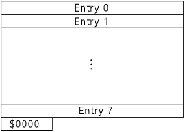
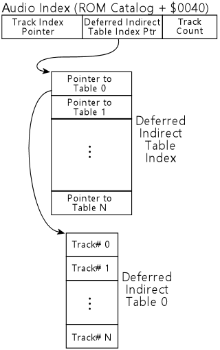
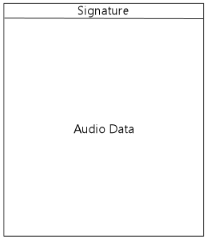
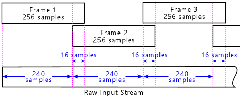
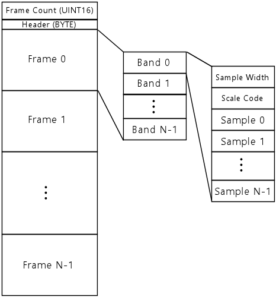
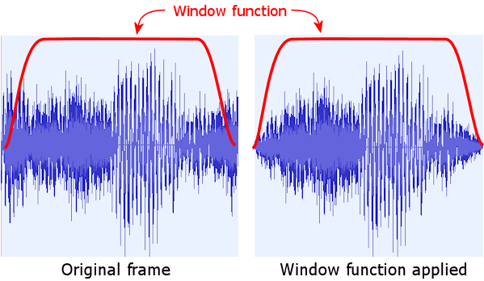
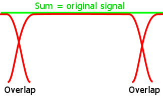
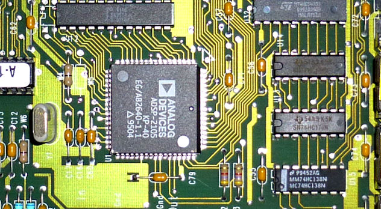

This is an unofficial technical reference guide to the DCS audio format used in the classic Williams/Bally/Midway pinball machines of the 1990s. DCS defines a family of digital audio compression formats similar in design to mainstream formats like MP3 and Ogg Vorbis, along with a run-time system tailored to the event-driven playback environment of an arcade game. The system was originally implemented with purpose-built circuit boards based on the Analog Devices ADSP-2105, a specialized CPU designed for DSP applications. But we're not concerned here with the hardware; our focus is on the audio format, which doesn't contain any direct dependencies on any particular CPU or hardware platform. For those interested in the circuit boards, plenty of information is available elsewhere, including schematics published in the pinball service manuals, repair guides on various pinball sites, and PinMame's open-source emulation, which reverse-engineered most of the important details that can't be inferred from the schematics.
This reference guide describes the DCS audio encoding system in detail, including the procedures for encoding and decoding bit streams in each of the compressed audio formats. It also covers the "track program" system that controls playback, and the layout of the DCS audio ROMs. The reference material is detailed enough to facilitate the creation of new software that works with the format, including playing back material from existing ROMs, and even creating new ROMs with original audio recordings that can be used with the DCS hardware.
This documentation is part of my DCS Explorer project, which includes a portable C++ decoder/player that understands all of the DCS audio formats, and an encoder that can create new, original DCS audio ROMs, including new compressed digital audio streams in the DCS format. In the course of that project, I had to figure out how DCS works at a detailed level. I've attempted to capture what I learned here, for sharing and future reference. DCS Explorer's C++ source code might be useful as a companion to this material, as a reference implementation of the algorithms described here.
Our discussion here is limited to DCS as implemented in the WPC-based pinball machines. Williams also used the system in their video games of the same period, and they continued to develop and enhance DCS for video games for some years after the last WPC pinball titles were released, upgrading the hardware to faster processors and expanded storage, and adding stereo and surround sound capabilities. All of that later development is beyond our scope here, though.
I find DCS to be a fascinating bit of pinball and technology history. It was cutting-edge for its day, and it's evident in the rapid evolution of the format over its first couple of years how new this all was and how much its creators were learning from practical application of what was until then mostly theory. It's all the more amazing to me that this little feat of engineering was all for the sake of pinball, of all things! There's no serious practical reason today for anyone to understand the format; I only looked into it to satisfy my curiosity. Perhaps this reference will do likewise for a few other people who wonder what's inside those audio boards.
Michael Roberts
June, 2023
In keeping with the "unofficial" theme, my terminology for DCS's internals is entirely made up. I have no idea what terms the original DCS developers used. I should define a few terms that I use throughout this document in a special technical sense that's somewhat different from t the ordinary meanings of the words.
DCS has two major object types related to audio playback:
These object types are explained in much greater detail later in this document. But I wanted to mention them up-front because of the potential confusion about what a "track" is. In an everyday, non-technical context, an audio "track" would probably be understood as something like a single MP3 file - a simple audio clip that you load into a player for playback from start to end. DCS has simple linear audio clips like that as well, but I call those "streams", to distinguish them from the miniature procedural programs that I call "tracks". The reason I call the latter "tracks" is that they're the operational units that you see from the outside world. DCS doesn't expose the individual stream objects in its external command interface - that is, the data port interface that the main WPC board, which controls the mechanical part of the pinball game, communicates with when it wants to activate sound effects. The WPC board can only access the tracks. From an outside perspective, the track programs basically are the audio objects: if you want to play a particular audio cue, you tell DCS to play the track that plays back that cue. That's why it seems more appropriate to refer to these objects as the tracks. Anyone looking at DCS from the outside would think they actually are "tracks", in the ordinary sense of the word as linear audio clips. The streams, in contrast, amount to an implementation detail that's invisible from the outside. But the streams are obviously of extreme importance once you get inside the software and the format, so we certainly need a name for them, and we need to be precise about which object type we're talking about - track or stream - at any given time.
The DCS software organizes all of its audio processing into "channels". These aren't stereo channels or surround-sound channels! The DCS-based pinball machines only had monophonic speaker systems, and the audio recordings themselves are purely in mono. (Later versions of DCS used in video games did have stereo and surround features, but that never made it into any DCS pinball games.)
What I call "channels" throughout this document are just internal data structures that keep track of the individual audio clips that are currently active. The software has multiple channels purely to allow playing multiple clips simultaneously, to be mixed together while still in the digital domain to form the mono output signal. These are channels in the sense of a record studio's mixing console, where the engineer combines the separate recordings of the drums and vocals and so forth into the final mix.
Each channel is a container for two live playback objects: one track, and one stream. The channel keeps track of the current program counter in its track and the current stream pointer for its stream, along with counters for repeat counts and waits. Each channel also has several mixing level adjustments to control the relative volume of its contribution to the mixing stage.
The earliest version of the DCS software, used in the 1993 games, has four channels, numbered 0 through 3. All of the later versions have six channels, numbered 0 through 5. (The DCS-95 software makes room in its memory structures for eight channels, but it never processes more than six of them. Not in the pinball versions of the software, at least; perhaps the extra space was there for the sake of a DCS video game.)
Hex numbers here are written with a "$" prefix: $FF is the same as 255 decimal, for example. Decimal numbers are written in the ordinary way with no special prefix. When showing values that go in fixed-width fields, I often include leading zeros to pad out the number to its fixed width: $00A0 for a value that goes in a 16-bit field, for example. An offset within a ROM requires 20 bits to specify, so I usually write these as 5-hex-digit numbers, such as $04000. Leading zeros in a hex number don't change its meaning; they're just there to emphasize the way the value is stored internally.
DCS is Big-Endian. All multi-byte integer types in the DCS software and ROM data are arranged in big-endian order (most significant byte first). This was undoubtedly chosen for convenience of implementation on the original ADSP-2105 processor platform, since that processor uses big-endian conventions.
I use the following notation to refer to various integer types found in the ROM data:
"Signed" means that the values of that type are interpreted as having an arithmetic sign (positive or negative). "Unsigned" means that all values of the type are positive or zero, never negative. An unsigned N-bit integer has twice the positive range of a signed integer of the same bit width, but the trade-off is that it can't store any negative values.
Some examples and descriptions of algorithms use C/C++ code, or C/C++-like pseudo-code. Most of the variables there use either native C/C++ integer types (int, unsigned, etc) or the types defined in the standard C++ header file stdint.h. stdint.h defines a set of integer types with specific bit widths, which are useful in a DCS context because many of the calculations are bit-oriented and thus depend upon the bit-level representation of the value. The stdint.h types use the naming convention intN_t for a signed N-bit integer (e.g., int16_t for a signed 16-bit int), and uintN_t for an unsigned N-bit integer (uint32_t is an unsigned 32-bit int).
The original ADSP-2105 implementation of the decoder makes heavy use of something called fixed-point numbers, which are a way to represent fractional values (and perform arithmetic on them) using only integer variables. I've mostly tried to keep this sort of ADSP-2105-specific detail out of this document - it shouldn't really matter how the ADSP-2105 happened to store a particular number, because the abstract mathematical value of the number is usually what's important, not the particular bit pattern used to store it on one particular machine. But fixed-point numbers inevitably come up in a few places where I have to explain exactly how the original decoder does particular calculations, so I wanted to mention what they are and how to interpret them.
The DCS ADSP-2105 code uses two forms of fixed-point numbers: 0.16 and 1.15 numbers. A 0.16 number is a 16-bit integer variable where all 16 bits are interpreted as following the binary point. The mathematical value of a 0.16 variable is the unsigned integer value divided by 65536. A 1.15 variable is interpreted as having one bit before the binary point and 15 bits after. The value of a 1.15 variable is usually the signed integer value divided by 32768, although it's also possible to treat them as unsigned.
For the most part, the data structures in the DCS ROMs have no alignment requirements. In particular, there's no need to align the 16-bit or 24-bit integer types on any particular boundary. The DCS boards are physically wired so that the CPU reads from the ROMs in units of 8-bit bytes, so at the hardware level, every byte in a ROM is individually addressable.
However, there is one object type that does have special alignment requirements: compressed audio streams. The rules are explained in the Audio Streams section.
Many of the data structures in the ROMs contain pointers to other locations in the ROMs. For example, track programs contain pointers to the audio streams they play. These cross-references from one ROM structure to another use a format that I call a "linear ROM pointer", which treats the collection of installed ROM chips, U2 through U9, as though they were arranged in a single, contiguous address space. The size of this space varies by hardware version: for the DCS-93 boards, it's a 23-bit address space, capable of spanning 8MB; for the DCS-95 boards, it's a 24-bit space, which can in principle address 16MB.
A linear pointer is stored within the ROM as a sequence of 3 bytes. This is interpreted as a 24-bit integer value, in the usual big-endian order (most significant byte first). For the DCS-93 boards, where the actual pointers only use 23 bits, the high-order bit is ignored when interpreting the pointer, and should always be set to zero when stored in the ROM.
The simplest way (for me, at least) to think about the linear ROM pointers is to break each address into two bit fields: a chip select field and an offset field:
If you find yourself reading through the ADSP-2105 machine code of the original decoder implementations, or if you look at PinMame's source code, you'll find that the ADSP-2105 code thinks about these pointers in a more convoluted way, slicing and dicing the bits of a pointer into two 16-bit registers on each use, using a series of bit-shift instructions that looks a lot more complicated than the interpretation described above. We don't have to worry about that when just thinking about the data format, though. The complicated bit-shifting in the original decoder is an artifact of the ADSP-2105 implementation that's not relevant to the format itself. The ADSP-2105 only has a 14-bit address space for data memory, so it has to go through some extra steps to access the 8MB to 16MB space that the ROMs comprise. None of that is important to the format itself or to encoder/decoder implementations on modern hardware with large address spaces. My native C++ implementation of the decoder, for example, treats each ROM as a single, contiguous byte array, which directly corresponds to the simple interpretation of a ROM pointer as a chip-select-plus-offset.
All of the program code and audio data for a DCS sound board is contained in a set of ROM chips. The circuit boards have slots for up to 8 ROMs, either 512KB or 1MB in size, depending upon the hardware version. The original DCS-93 audio-only boards use 512KB (512Kb x 8) chips, and the DCS-95 audio/video boards use 1MB (1Mb x 8) chips. The DCS-95 boards were designed in such a way that they could be configured at the factory (via a soldered jumper) to accept either 1MB or 2MB chips, but all of the boards shipped originally in pinball machines apparently use the 1MB configuration. (Williams also used DCS boards in its video games of the same era, so it's possible that the 2MB configuration was used in some of those.)
The ROM chips are labeled U2 through U9 on the DCS-93 boards and S2 through S9 on the DCS-95 boards. For convenience, I usually refer to them as Ux for both generations.
Chip U2 is required on every board, since it contains the ADSP-2105 program code. At the hardware level, chips U3 through U9 are optional and can be left unpopulated. They're installed or not in each game according to how much space is needed to store all of the audio data for the game's soundtrack. There doesn't seem to be anything in the hardware or system software that requires the populated ROMs to occupy sequential slots, but that's how it's always done in practice: e.g., if a given title has three ROM chips, they're always laid out as U2, U3, and U4.
Note that a given ROM chip is programmed at the factory to occupy a specific slot on the board. You can't arbitrarily move ROMs around between slots. If a ROM is programmed as U3, it has to be installed physically in slot U3.
Of the eight ROMs, the only one with any significant internal structure is the first chip, U2. Its memory map varies slightly from one DCS system software version to the next, but it always contains the elements shown below in Figure 2, in the order shown. The variability is all in the exact addresses of the elements.
| Address | Name | Description |
|---|---|---|
| $00000 | Hard reset program | The hard reset boot loader program image, approximately 4KB of executable ADSP-2105 machine code. The CPU automatically loads this image into program memory when an external reset signal is asserted. |
| $01000 or $02000 | Main decoder program | The main DCS operating system program image, about 4KB of executable ADSP-2105 machine code. The CPU loads this image into program memory (replacing hard reset boot loader program) after the boot program initiates a soft reset. This code in turn loads additional program code from the overlays section. |
| $01000 to $05000 | Program overlays and data tables | Contains additional ADSP-2105 machine code that the main decoder program loads during startup. This is organized into "overlays" that occupy the same physical program memory on the CPU: one overlay containing initialization code that's only used during startup, and a second containing additional decoder program code that's loaded after startup completes and remains resident. This ROM section also contains static data tables (used in the decoder) that the initialization overlay loads into RAM during startup. |
| $03000, $04000, or $06000 | ROM catalog | Index of the populated ROMs. See below. |
| ROM catalog + $00040 | Audio Index | Index of the audio data. See below. |
| Immediately after audio index | Audio data | The audio data, consisting simply of a series of compressed audio streams, packed sequentially. Each stream must start on either an even or odd address boundary, depending upon the format type, so there might be one meaningless byte, just for padding to the required boundary for the next stream, between consecutive streams. Each stream must be fully contained within a single ROM chip (i.e., a stream can't be split across ROMs). |
The hard-boot program at U2 offset $00000 performs these steps:
The purpose of the initial 250ms data port monitoring period is that it allows the WPC host to reset the sound board at any time, under program control, without having to go through the full power-on self-test procedure. The WPC host has access to a hardware port that allows it to assert a reset signal on the ADSP-2015 CPU, which forces the CPU into its hard boot mode as though it had just been powered on. The WPC software exercises this authority at certain times, such as whenever the user enters or exits the operator menu, presumably to return the sound board to initial conditions just in case it was in a wedged state due to a software fault. At such times, the host sends a data byte immediately after asserting the reset to instruct the sound board to bypass the power-on tests and resume decoder operation immediately. The whole reset process is imperceptibly quick when the self-tests are skipped, so the reset can be used freely to ensure the board is in a good state any time no audio is playing.
The "bong" tone played after the self-test is a 195Hz square wave, starting at 100% PCM amplutude, then attenuated with an exponential decay envelope by about 0.4% every 1ms. That is, every 1ms, multiply the current square wave amplitude by 0.996 to get the new square wave amplitude. The overall duration of the tone is 750ms.
The section at the very beginning of U2 that contains the hard reset boot program also contains a "signature" string: plain text that identifies the ROM set, perhaps so that somebody in possession of a loose chip of uncertain origin can read the first few dozen bytes of the ROM and see what's there. The signature string starts at byte offset 4 and runs for up to about 70 bytes. It consists of free-form ASCII text in the printable character range (code points 32 through 126), terminated with a zero byte, usually containing the title of the pinball machine the ROM goes with (sometimes shortened, and sometimes a nickname, or what might have been an in-house working title, rather than the formal production title) and a copyright date. This ASCII text is loaded into the ADSP-2105 program memory space along with the rest of the program image, even though the text isn't valid ADSP-2105 executable code; the boot program is contrived to jump past these bytes so that the CPU doesn't attempt to execute them.
The main decoder program is essentially the DCS operating system. It's a fairly complex program with many functions, but its basic structure is roughly like this:
The hardware autobuffer that feeds samples to the DAC is exactly twice the size of one audio frame (one frame is 240 samples). The decoder uses the buffer according to the common double-buffering idiom, where the playback hardware reads samples from one half of the buffer while the decoder software simultaneously writes samples into the other half of the buffer. The reader and writer swap halves at start of each new frame.
The loop maintains real-time playback synchronization by waiting for the autobuffer read pointer to advance into the next buffer section on each loop cycle. This scheme assumes that the decoder can always fill its half of the buffer faster than the real-time playback can exhaust the other half; as long as that's true, the decoder will simply burn up the time difference on each cycle waiting for the playback pointer to catch up with it. In practice, the decoder is always fast enough for the assumption to hold, but even if some pathological condition arose where the the decoder fell behind the player, it wouldn't be catastrophic: playback would "stutter", as the player loops back into a portion of the buffer that it already played through once, and would eventually return to normal once the decoder finished with the slow frame.
Saving and restoring the volume setting: The DCS boards don't have any hardware to control the audio volume; the audio amplifier in the analog stage is set at a fixed gain. Volume control is handled purely in the software, in the digital domain, by applying a scaling factor to the PCM samples. The master volume setting on the DCS board is simply stored in a RAM location, so the setting is lost every time the sound board CPU resets. The DCS board doesn't have any non-volatile storage of its own, so it can't do anything to save the value across resets; it has to count on the WPC host to save the setting in a persistent storage location and send a "set volume" command after every reset. The WPC software is designed with this requirement in mind, and does, in fact, send a volume command to the data port after each sound board reset that it initiates. If the sound board resets on its own due to a software or hardware fault, the WPC board doesn't have any way to detect this, nor is there any way for the sound board to solicit an update on its own, so the volume level after a spontaneous reset will be stuck at the default value of $67 (equivalent to 12 on the 0-31 scale in the user interface) until the user manually adjusts it or activates the operator menu.
The ROM catalog consists of 8 entries of 6 bytes each, plus a two-byte end marker.
The table contains one entry per chip in the ROM set. The end of the table is marked with $0000 in the size field of the first slot that isn't occupied. If all eight slots are occupied, the extra $0000 word after the 8th slot serves as the end marker.
The DCS software doesn't contain any assumptions that the table is in any particular order, so other applications should likewise make no such assumptions. In practice, though, all of the DCS ROMs order the entries by chip number, so the entry for U2 is always in the first slot, U3 is always in the second slot, and so forth.
Each entry consists of three 16-bit integer fields (in big-endian byte order, as in all DCS integer types).
| Offset | Type | Name | Description |
|---|---|---|---|
| 0 | UINT16 | Size | The size of the ROM chip, in units of 4KB (hence 128 for a 512K ROM, or 256 for a 1MB ROM); zero in this field marks the end of the table |
| 2 | UINT16 | Chip# | The chip number, 0 to 7, corresponding to ROM U2 to U9 |
| 4 | UINT16 | Checksum | The checksum for this ROM chip (see below) |
Each checksum is a 16-bit value computed as follows:
(Equivalently, you could think of there being two separate 8-bit checksums, one that sums all of the bytes at even offsets the other at odd addresses.)
To compute the mod 256 sums, you can simply use an 8-bit register or variable for the running total, discarding all overflow bits in the intermediate results. Or, if it's more convenient, you can get the same result by adding all of the bytes together in a wider variable (a UINT16, UINT32, etc) and then keeping only the low-order 8 bits of the final sum, either by narrowing the variable type to 8 bits or by masking the result (applying a bitwise AND) with $FF.
Note that the checksum in the catalog entry representing U2 is a little tricky to get right when creating a ROM, because the U2 checksum bytes are themselves part of U2, hence they're included in the calculation the U2 checksum. A program that's creating a ROM in this format must thus contrive for the checksums to come out right. In particular, you can't just compute the checksum of U2 and then plug the result into the ROM catalog entry for U2, because doing so changes the contents of U2 and thus changes its checksum. You can repeat that process forever and it'll never converge. One way to solve this is to reserve two spare bytes (one at an even address, one at an odd address) elsewhere in the U2 space to use as free variables for satisfying the checksum constraint. First, set the checksum field in the catalog entry representing U2 to hand-picked values, say $0000, then add up all of the bytes in the ROM except the spare bytes, then set the spare bytes to the unique values that, when added to the all-of-the-other-bytes total, yield the hand-picked checksum value chosen earlier. (These unique values are easy to figure for DCS's simple linear checksum calculation: just subtract the all-of-the-other-bytes totals from your chosen checksum bytes mod 256.) The software that Williams used to create the DCS ROMs probably used this exact procedure, because the U2 checksums are in fact always zero.
Of the variably-located sections, the one that's of most interest to external applications is the ROM catalog. The audio index is equally important, but we can easily find that as soon as we know the location of the catalog, and the catalog is easier to identify, so it's the place to start.
The ROMs don't contain enough self-description metadata that we can create a simple formula to figure the location of the catalog, but we can find it by applying some heuristics.
First, the catalog in every DCS pinball ROM is at one of three fixed offsets within U2: $03000, $04000, or $06000. We only have to look in each of those three locations, and we should always find the catalog in one of them.
Second, it's fairly easy to determine whether or not the 50 bytes at one of these locations is the catalog. The most reliable way is to compute the checksums for all of the ROMs on hand and test each candidate catalog location to see if it contains the correct size and checksum value in each slot. It's extremely unlikely that some random data that's not the catalog would accidentally contain the matching values. A less reliable (but still pretty reliable) way is to simply parse each potential catalog section to see if the chip number and size values are within the valid range (chip numbers 0 through 7, and size values of either 128 or 256, for 512K and 1MB chips respectively). If all of the entries are in range, there's a very good chance that this is the catalog, because the valid ranges are so tightly constrained that it's unlikely that non-catalog data would be in range for every slot.
The audio index consists of three entries, located $40 hex (64 decimal) bytes after the start of the ROM catalog. The byte offsets shown in the table below are from the start of the ROM catalog.
| Offset | Type | Name | Description |
|---|---|---|---|
| $0040 | UINT24 | Track Program Index Pointer | A 24-bit linear ROM pointer to the start of the track program index |
| $0043 | UINT24 | Deferred Indirect Table Index Pointer | A 24-bit linear ROM pointer to the start of the deferred indirect table |
| $0046 | UINT16 | Number of Track Programs | The number of entries in the track program index |
The audio index contains a 24-bit pointer to the track program index. The track program index is a contiguous, packed array of 24-bit pointers to track programs. Each entry in the track program index is a pointer to the first byte of the corresponding track program.
Each entry in the track program index corresponds to a track number, starting at 0, and increasing by 1 at each position. The number of elements in the array is specified in the "Number of track programs" field in the audio index.
Many track numbers are unused in a given ROM. An index entry for an unused track number is filled with three $FF bytes. (Note that it's $FF bytes, not zeros.)
To find a track by number, multiply the track number by 3 and add it to the track index pointer from the audio index. This gives the location of the 24-bit pointer to the first byte of the track data.
See Track Programs for details on the contents of these objects.
This feature is implemented in all of the DCS software versions, so you'll find a slot for this table in every ROM, but none of the pinball games ever used it. See Deferred Tracks for a general description of the mechanism.
The Deferred Indirect table index pointer in the audio index is a UINT24 linear ROM pointer to an array of UINT24 pointers that I call the Deferred Indirect table index. This contains one entry per Deferred Indirect table.
Each element of the Deferred Indirect table index is itself a UINT24 linear ROM pointer, which points to the table corresponding to the index slot. Each table is yet another array, this time an array of UINT16 elements, containing track numbers.
There's no metadata in the ROM (as far as I can tell) that indicates how many entries the Deferred Indirect table index contains, nor how many entries are in each individual table. The sections of the software that access these tables don't do any range checking; they just count on the ROM data not to make invalid references. Assuming that there aren't any invalid references, the sizes of the tables can be inferred as follows:
Note that the algorithms above assume that the ROM doesn't contain any invalid references (past the ends of any of the tables). Both scans also can only tell you the reachable size of the tables - the number of entries actually referenced somewhere in the ROM. It's possible for the tables to have extra entries past their reachable portions, which we have no way to detect. However, it's irrelevant if they do, since unreachable entries can never be accessed and are thus can be ignored for any purpose for which you'd need to know the sizes of the tables.
The audio data section has no structure. It's just a collection of audio streams in the DCS format, strung together one after another to fill out the available space. Each stream must start on either an even address or an odd address, depending on the stream format, so there's up to one byte of padding between adjacent streams when needed to meet the alignment requirement for the next stream.
As far as I can tell, the ROMs don't contain any sort of index to the audio streams, and the streams themselves don't have any recognizable markers that indicate where they start or end or how they're internally structured. So there's no way to scan from a random starting point in the ROM and detect where the next stream starts, for example.
Even so, it is possible to exhaustively enumerate all of the playable streams. Every playable stream is reachable from an opcode $01 instruction in a track program, and the track programs are all reachable from the track index. We can use this to find the starting address of every stream, by iterating over all of the track numbers, and parsing all of the opcodes in each track's program to find instances of opcode $01.
Even knowing the starting location of a stream, we still can't easily determine its length in bytes. The first UINT16 in a stream indicates the number of DCS frames the stream contains, but that doesn't translate directly to bytes. The rest of the stream is just a packed array of bits representing the frame data, with no internal metadata or markers. Determining the byte length of a stream thus requires decoding the entire stream. That is, in fact, how DCS Explorer determines the byte size of streams when listing or extracting them.
Short of fully decoding each stream, the only way to guess at the length of a stream would be to enumerate the starts of all of the streams, place these in address order, and assume that all of the bytes from the start of one stream to the start of the next stream in address order belong to the first stream. That would yield a reliable upper bound for the length of each stream, although it might (harmlessly) include some extra bytes that aren't actually part of the stream, such as padding bytes between streams, or other object types that were placed between streams in the memory layout. As far as I know, there aren't any such non-stream objects in the audio data section of the ROMs, but it's possible that there are other types I haven't accounted for yet. At any rate, it would be harmless to include any such extra bytes as part of a stream if you were, say, extracting the stream to an external file; the extra bytes would just be meaningless garbage after the end of the stream that a decoder would know not to read simply by virtue of running out of frames before reaching them.
Unused space at the end of a DCS ROM is typically filled with $FF bytes.
ROMs U3 through U9 each contain a small, ad hoc signature string, and after that simply continue the "Audio Data" section from U2, containing more audio streams packed end-on-end, with up to one byte of padding between adjacent streams to meet even or odd alignment requirements per stream. Each stream must be fully contained within a single ROM chip (a stream can't be split across two ROMs).
The signature strings in ROMs U3 through U9 always start at the first byte of the ROM image. They consist of ASCII text, typically of the form U3 11/19/95 - that is, the chip number and a date, presumably the build date for the ROM image. The exact format varies, and some games have additional ad hoc text mixed in. The signature always (as far as I've seen) ends with a zero byte, in the style of a C programming language zero-terminated string.
Most commands that the WPC board sends to the sound board are treated as track commands, which load tracks by number. There are also a handful of special commands that the operating system software handles directly, rather than as track command lookups; see Special Commands. Any command that's not a special command, though, is just a track number.
A track command from the WPC board is a two-byte sequence that forms a big-endian UINT16 whose value is not between $55AA and $55FF (that range is reserved for the special commands that the operating system processes directly). The UINT16 value is used as an array index into the Track Program Index table, whose location is obtained from the Audio Index.
The Track Program Index is an array of UINT24 linear ROM pointers. To look up a track in the index, multiply the track number by 3, and add the result to the Track Program Index pointer value from the Audio Index. Read the UINT24 linear ROM pointer from the resulting address. If the high byte is $FF, the track slot is unoccupied, and DCS ignores the track command. Otherwise, read the first two bytes from the location represented by the pointer, and interpret them as follows:
A track with type code 1 contains a byte-code program, starting at the first byte after the track type code byte. The program consists of a series of instructions coded in a special byte-code language defined by DCS. The byte-code language can be thought of as similar to a microprocessor's machine code instruction set, but it's not actual ADSP-2105 machine code, or machine code for any other real CPU; it's just a made-up code defined by the DCS software for implementing these track programs.
As in a typical CPU instruction set, the byte-code instructions are executed sequentially, one at a time, in the order in which they appear in memory.
Each instruction has two fixed fields: a two byte "Wait" prefix, as a UINT16 value (two bytes in big-endian order), and a one-byte "opcode", which specifies the operation to perform at this step. These three fixed bytes are followed by a varying number of operand bytes, the number and meaning of which are specific to each opcode. Not all opcodes have any operand bytes, in which case the three fixed bytes constitute that entire instruction.
There's no padding between instructions. The last operand byte of an instruction is followed immediately by the first Wait prefix byte of the next instruction.
Every instruction starts with a UINT16 Wait prefix. This specifies a wait time before executing the associated instruction, measured in DCS audio frames. This can be zero to indicate that the instruction is to be executed immediately with no waiting. The special value $FFFF means "wait forever".
When the byte-code execution subroutine runs on a channel, it executes one instruction at a time in a loop until encountering an instruction with a non-zero wait prefix. At that point, it sets a wait time counter in the channel to the wait prefix value, and then returns to the main loop, suspending the program until the wait elapses. Execution on the channel resumes after the main loop has completed N iterations, where N is the number of frames specified in the wait prefix. When the wait prefix is $FFFF, the program is suspended forever. (A permanently suspended program doesn't freeze the channel forever, because it can still be terminated by an outside event, such as a new command from the WPC host that loads a new track program into the same channel.)
$00 / End of Track
Marks the end
of the track program. The track program and current audio stream
pointers for the channel are reset, stopping any audio playback
currently occurring on the channel. The byte-code execution
subroutine returns to the main loop. This should always be used
as the last instruction in every track program.
$01 UINT8(channel) UINT24(stream-pointer) UINT8(repeats) / Play Stream
Loads the specified stream (at the given linear ROM pointer address) into
the specified channel, which need not be the track program's own channel,
and starts it playing. Sets the repeat count as specified. The special
repeat count value 0 means "loop forever".
$02 UINT8(channel) / Stop Channel
Stops all track program
execution and audio stream playback in the specified channel number.
If the channel is the same as the track's containing channel, this
immediately terminates the current track program.
$03 UINT16(track-number) / Queue Track
Queues the specified
track number for playback, exactly as though the WPC board had sent
the track number to the data port as a command code. The track number
is placed in the same internal memory queue used to hold command codes
received through the data port, so it's not processed until the next
incoming command processing step in the main loop. The queuing aspect has the
important implication that the new track doesn't interrupt the current
track program for the duration of the current frame, even if the new
track occupies the same channel.
$04 UINT8(byte) / Write Data Port 1993a software only
Writes the specified byte
value to the data port, which sends the byte to the WPC host board.
(This variant of the opcode applies to all
ROM versions except the early 1993 software version shipped with Indiana Jones:
The Pinball Adventure and Judge Dredd, which use the
Set Channel Timer variant below.)
Special side-effect for decoder software 1.05: For this decoder software version only, two specific byte values have special side effects:
The "global volume override" on channel 5 makes this channel act as though the master volume setting were turned all the way up to $FF, regardless of its actual setting. This only affects channel 5. The flag is automatically cleared any time a new stream being playback on channel 5 via opcode $02.
$04 UINT8(byte) UINT16(counter) / Set Channel Timer 1993b/1994+ software only
If the
byte value is non-zero, write it immediately to the data port, and
set the channel timer according to the "counter" value. To set the
channel timer, load the counter into the channel's interval timer
slot, and load the byte value into the channel's data value slot. if the
byte value is zero, simply clear the channel timer, without writing
anything to the data port. The counter value is ignored when the
byte value is zero - the data port is always simply cleared in this case.
(This variant of the instruction is only implemented in the early 1993
software version shipped with
IJ:TPA and JD; the Write Data Port variant above is
used instead in every other software version.)
("Channel timers" are implemented in every version of the software, but are only accessible in the early 1993 software; the code implementing the timers is effectively vestigial in all later versions because it's impossible to program the timers. The channel timers simply keep track of an interval (measured as always in DCS audio frames) and a data port byte value. Every time the interval elapses, the byte value is sent to the data port. Setting the interval to zero clears the timer. They're called channel timers because there's one such data structure per channel.)
$05 UINT8(channel) / Start Deferred
Triggers the pending deferred
track on the specified channel, if any. If the channel's "pending next
track type" slot is empty, the opcode does nothing at all. If the
slot is set to type 2 (plain deferred) or type 3 (deferred indirect),
the specified track is queued, exactly as though it were queued via
opcode $03. See Deferred Tracks for a more
detailed explanation of the deferred track mechanism.
$06 / No-Op1993 software only
This instruction is a no-op for the 1993 games, with no operand bytes.
$06 UINT8(index) UINT8(value) / Set Variable 1994+ software only
Sets the variable at the given index to the given value. The "variables" are simply
slots in memory where these values can be stored, so you can also
think of this as setting the indexth element in an array of bytes.
The only use of these variables is in Deferred Indirect
tracks, which specify the pending track in terms of a table to be
indexed by one of these variables.
Note that the upper limit for the index is unclear, but it appears that around 80 slots are reserved in memory for these variables in the original ADSP-2105 decoder implementations. New decoder implementations should allow for 256 variables, so that any possible value of index can be safely used, while encoders should limit the index value to the range 0-79 to avoid corrupting memory when run under original ADSP-2105 implementations. The original ROM software doesn't range-check the index but does appear to reserve substantially fewer than 256 slots in memory.
$07 UINT8(channel) INT8(level) / Set Mixing Level
$08 UINT8(channel) INT8(delta) / Increase Mixing Level
$09 UINT8(channel) INT8(delta) / Decrease Mixing Level
Change the mixing level for the specified channel. The change
is applied immediately (with no fade interval). Opcode $07 specifies the
new level in absolute terms; opcodes $08 and $09 specify the new level relative
to the current level, adding or subtracting the given delta.
Note that the level/delta operand is interpreted as a signed 8-bit value, -128 to +127.
See Channel Mixer for details on how the mixing scheme works.
$0A UINT8(channel) INT8(level) UINT16(frames) / Set Mixing Level with Fade
$0B UINT8(channel) INT8(delta) UINT16(frames) / Increase Mixing Level with Fade
$0C UINT8(channel) INT8(delta) UINT16(frames) / Decrease Mixing Level with Fade
Change the mixing level for the specified channel, gradually
adjusting it from the current level to the new level over
the given number of audio frames. Opcode $0A specifies the new level
in absolute terms; opcodes $0B and $0C specify it relative to the channel's
current level, adding or subtracting the given delta.
Note that the level/delta operand is interpreted as a signed 8-bit value, -128 to +127.
See Channel Mixer for details on how the mixing scheme works.
$0D / NOP
No Operation - does nothing.
$0E UINT8(counter) / Start Loop
Marks the start of a looping section. If the counter value is zero,
the loop is infinite; if it's non-zero, the loop iterates the specified
number of times. Loops can be nested within other loops.
$0F / End Loop
Marks the end of a looping section started earlier in the same program
with opcode $0E. If the loop counter has reached the number of iterations
specified in the $0E instruction, control continues to the next instruction
following the end of the loop; otherwise control returns to the top of
the loop (the instruction immediately following the $0E instruction that
opened the loop).
$10 UINT8() UINT8()
$11 UINT8() UINT8() UINT16()
$11 UINT8() UINT8() UINT16()
No known function. Handlers for these opcodes first appear in
the software for the DCS-95 boards. The handlers load some data based
on the operand bytes into internal memory structures associated with
the channel, but these memory locations are never used anywhere else
in the code, so the instructions ultimately cannot have any effect.
The handlers must represent some planned feature that was started
but abandoned before it was finished. The data structures
involved are also written by the $55BA series of special command codes,
so the two are probably related.
Other
All other byte values are invalid as opcodes. The DCS ROM software
performs a soft reset on the CPU on encountering any invalid opcode,
on the assumption that something in its internal memory state must
be corrupted.
Type codes 2 and 3 are deferred tracks. These tracks don't have associated byte-code programs; the payload is simply a UINT16 value, stored as two bytes in big-endian format, immediately following the track type code byte.
Loading a deferred track doesn't affect the currently playing stream or track program in the channel. Instead, it loads the UINT16 value into the channel's "pending track" slot, and loads the deferred type code (2 or 3) into the channel's "pending track type" slot. Loading those two values completes processing of the deferred track command.
See Deferred Tracks for more details on the deferral mechanisms.
The "Deferred Track" mechanism lets the sound designer indicate that a given track command doesn't start playing its track program immediately when the WPC host sends the command, but rather sets up a separate target track for future play, to be started when a corresponding event occurs in a third track program's execution.
The purpose of this mechanism is to synchronize the transition to the new track on a selected music beat, to make the transition sound seamless to the user, without the need for the WPC host to precisely time the event. The WPC host can't easily synchronize sound events with precision because its software runs asynchronously from the sound board, and the data port mechanism that connects the two isn't designed for real-time event coordination. The sound board, in contrast, can easily synchronize actions with frame-precise points in playback, since everything the sound software does is based on the frame timing.
There are two flavors of deferred tracks: "plain" deferred tracks, marked in the track program with type code 2; and "deferred indirect" tracks, marked with type code 3.
A plain deferred track (track type code 2) is simple: in lieu of a byte-code program, the track's body consists only of a UINT16 value (two bytes, unsigned, big-endian), which is interpreted as a track number. I call this the "target" track because it's the one that actually gets played (eventually) when the deferred track is loaded by a WPC command. For example, suppose that track $0010 is coded as a type 2 deferred track on channel 0, and the UINT16 value stored as its content body is $0020. When the WPC host sends command code $0010, the DCS board looks up track $0010. There, it finds type code 2, indicating a plain deferred track, so it reads a UINT16 value from the track $0010's body, which yields $0020. DCS stores $0020 in the special memory location for "pending deferred track on channel 0", along with the deferred-type-2 code.
That completes the command processing for command $0010, since a deferred track has no byte-code program of its own.
The value $0020 now sits lurking in the "pending" memory location, waiting until some other track - one that's actively executing - executes an opcode $05 with channel $00 as its operand. That opcode has the effect of reading the "pending" memory location for the channel specified in the opcode, and immediately loading the track number found there into its channel. (This also clears the "pending" location on the channel, since starting the track completes the whole deferral operation.) If the "pending" location doesn't contain a type 2 or type 3 track number at the time an opcode $05 executes, the opcode $05 simply has no effect.
A Deferred Indirect track (track type code 3) is an elaboration of the plain deferred scheme that allows the source track to specify a list of target tracks to choose from when an opcode $05 triggers the pending track on the channel.
Like a plain deferred track, a Deferred Indirect track's body consists only of a UINT16 value; for both deferred types, there's no byte-code program associated with a deferred track. The UINT16 in a Deferred Indirect track has a different interpretation, though. The low byte is the index of a Deferred Indirect Table, and the high byte is the index of an opcode $06 variable. As with plain deferred tracks, loading a Deferred Indirect track by way of a command from the WPC host simply loads the UINT16 value into the "pending" register for the track's channel, and has no other immediate effect.
When an opcode $05 targeting the same channel is next executed in a running track program, DCS reads the "pending" register for the channel and sees that it contains a type 3 Deferred Indirect code. It breaks the pending UINT16 code into the two parts (table index and variable index), reads the current value of the variable, and uses the value as an index into the selected table. The UINT16 at the selected table's selected element gives the final track number to load.
The Deferred Indirect tables are found via the Deferred Indirect index pointer in the audio index. The audio index entry is a UINT24 linear ROM pointer that points to the start of the Deferred Indirect index. The index in turn is an array of UINT24 linear ROM pointers, indexed by Deferred Indirect table index (starting at zero), with each element pointing to a single Deferred Indirect table. Each table is in turn an array of UINT16 elements containing track numbers. See Deferred Indirect table index for more on the layout of the table structures.
None of the original DCS pinball ROMs use the Deferred Indirect feature, even though it's implemented in all of the DCS software versions.
An audio stream encodes a sequence of PCM audio samples, using a compression system that substantially reduces the amount of storage needed to represent the data as compared with the plain PCM representation. A stream represents a linear time sequence of samples to be played back from start to finish.
The DCS stream encoding is conceptually similar to mainstream lossy audio compression systems such as MP3 and Vorbis, although it differs in the details, since it was developed independently before those standards were created; plus, it was designed only for use in embedded systems, where there was no need to conform to outside standards.
All of the similar lossy compression formats use a similar mathematical foundation. They start with a sequence of PCM samples taken at a uniform sampling interval. This sequence is divided into "frames" - fixed-length time windows within the overall sequence consisting of some manageable fixed number of samples (256 in the case of DCS). Each frame is transformed into the frequency domain, using a discrete Fourier-like transform. The samples, now in the frequency domain, are then re-quantized with a reduced number of bits that varies from sample to sample, trading off compression against how much of the original signal's detail is retained. Finally, the re-quantized samples are encoded into a bit stream, possibly using entropic coding to further reduce the average number of bits of storage required per sample.
Most of the compression in these systems comes from the re-quantization step, which represents the samples at lower resolution than was used to collect the original PCM samples and thus requires less space to store. Some additional compression is gained from entropic coding of the resulting samples (Huffman-like variable bit length coding, representing common plaintext values with shorter codewords and less common values with longer codewords, similar to Zip compression).
All of the DCS formats work in terms of "frames": 8.192ms time windows, containing 256 PCM samples at 31,250 samples per second.
Converting between the raw stream of PCM samples of the original source material and the DCS frames is a little more complicated than just chopping the stream into 256-sample sections, because each DCS frame overlaps each adjacent frame by 16 samples, as shown in Figure 6. Furthermore, the samples in the overlapping sections are modified by a "window function", which means that they're multiplied by a set of coefficients during encoding, and then multiplied by the inverse coefficients during decoding.
During encoding, the raw PCM sample stream is divided into frames as follows:
for (int i = 0 ; i < 15 ; ++i)
{
float c = windowFunctionCoefficients[i];
frameBuffer[i] *= c;
frameBuffer[255-i] *= c;
}
Note the symmetry: the first sample and last sample are multiplied by the same coefficient, as are the second sample and second-to-last, and so on.
The window function is constrained, but not specified, by the DCS format, or more specifically, by the original decoder implementation. The reference decoders uses a set of pre-defined constant coefficients to undo the windowing when reconstructing the signal, and these constants constrain the encoder's choice of window coefficients. See Encoding Window Function for a specific window function you can use, and an explanation of how to choose your own custom window function that satisfies the constraints if you don't want to use the one I came up with.
The decoding process reverses these steps, by mixing together the overlapping section of each pair of adjacent frames using the inverse of the encoding coefficients. To implement this, the decoder must maintain a 16-element overlap buffer from frame to frame. Clear this to all zeros when the program starts, and then just let it carry over from frame to frame after that. Decoding then proceeds as follows:
static const float decodingOverlapCoeff[] = {
0.009644f, 0.056274f, 0.129395f, 0.225952f,
0.343445f, 0.476776f, 0.616882f, 0.751251f,
0.866577f, 0.952942f, 1.006805f, 1.031403f,
1.034271f, 1.024597f, 1.011169f, 1.001465f
};
for (int i = 0 ; i < 16 ; ++i) {
pcmBuffer[i] =
(pcmBuffer[i] * decodingOverlapCoeff[i])
+ (overlapBuffer[i] * decodingOverlapCoeff[15 - i]);
};
The original ADSP-2105 code used 16-bit fixed-point arithmetic to perform the overlap mixing step. See Integer Frame Overlap Coefficients for the fixed-point equivalents of the coefficients.
Each frame contains 256 PCM samples, representing a time window of 8.192ms, but due to the overlap, only 240 samples from each frame are used during playback. The time between frames during playback is thus 7.68ms.
Here's the procedure, in very general terms, for converting an audio stream from raw audio data into a DCS stream object:
The step in the encoding procedure where you "choose the bit width to use to store the samples" is the crucial step that determines how compressed the encoded stream will be relative to the original raw data, and how much of the audio detail is retained (and how much is lost) in the reconstructed signal.
There is no simple algorithm for choosing the bit width. This is the subject of a great deal of theoretical and practical research in digital audio coding. Most of the mainstream formats define "psycho-acoustic" models based on the empirical properties of human audio perception. The most important aspect of this is known as "masking", which is the tendency of human audio perception to only be able to pick out the loudest portion of a complex spectrum; louder parts of the spectrum are said to "mask" quieter parts. There are formal mathematical models of masking that filter a complex signal to remove inaudible portions.
The DCS format itself doesn't impose any constraints upon what sort of filtering model is used to construct the encoded signal. The format does constrain how much the sample-bit-width parameters can vary from frame to frame, since the scaling factor for each band is coded into the stream header and is thus global to the stream. 1994 Type 1 streams allow for some frame-to-frame variability with their additional layer of scale coding, but even that's tightly constrained.
For a basic encoder implementation, a simple model based on the range of samples per band across the stream works reasonably well. There is one psycho-acoustic consideration that seems important even in a simple model, which is to prioritize allocating bits to the low-frequency bands (the first two or three DCS bands). Human hearing models generally hold that the ability to distinguish nearby frequencies is keenest in the low frequency ranges, below 1000 Hz, and becomes increasingly vague with higher frequencies. This makes it possible to use a relatively low bit rate in the higher bands without losing much audible detail, as long as the first few bands are stored at high resolution. My simple encoder model tries to allocate around 8-10 bits per sample in the first couple of bands, dropping off to a few bits per sample in the top bands.
To recover a stream of PCM samples from a DCS stream:
The core of the DCS encoding scheme is a discrete Fourier transform (DFT) that converts samples between the time domain (the PCM samples) and the frequency domain (the stored frame data). All versions of DCS use the same transform. The transform can be expressed in terms of real numbers as follows:
The lower-case-x[n] terms by convention represent the collection of N input values, in this case the PCM samples, and the capital-X[k] terms represent the transformed values. N is fixed at 256, and k is in the range 0..127. There are 256 real-number outputs, even though there are only 128 k's, because of the paired Re and Im elements in the X[k] set.
The notation Re and Im reflects that this is really a complex-number DFT in disguise, with the real and imaginary components separated, and no square roots of -1 in sight. The cosine sums are called the "real part" and the sine sum are the "imaginary part". This is equivalent to calculating a complex DFT on the real inputs, and then separating the results into their real and imaginary components. The real components form the cosine series, and the imaginary components form the sine series.
To encode a frame, compute the DFT of the PCM samples for the frame (after applying the window function coefficients to the first and last 16 samples of the frame). Arrange the Re X[k] and Im X[k] outputs of the DFT into a 256-element array, in this order:
float frequency_domain_frame[256] = {
Re_X[0],
Im_X[0],
Re_X[1],
Im_X[1],
Re_X[2],
Im_X[2],
...
Re_X[127],
Im_X[127]
};
This array serves as the input to the bit-stream encoding procedure.
During decoding, the 256 frequency-domain samples decoded from the bit stream are interpreted as an array of Re X[k] and Im X[k] in the same order as above, and are used as inputs to the inverse DFT. That yields the reconstructed PCM samples, for output to the DAC.
All operations on the samples through the encoding algorithms are linear, which means that you can use any scale you like to store the sample values. You can leave them in the form of the INT16 values from the PCM inputs, for example, or you can rescale them to C++ float values between between 0 and 1, say. It's best to use floating-point values instead of integers, though, because it's extremely tricky to avoid excessive rounding errors when using integers. Whatever type and scale you use, the final values must be converted back to INT16 values at the end of the transform process, for input to the bit-stream encoding procedure.
The simplest algorithm for performing the encoding transform is to compute the sums exactly as shown above. This is inefficient, though, since it requires about 65,000 multiplications. The other algorithms listed below are much faster.
The best way to perform a Fourier-like transform is to use a Fast Fourier Transform (FFT) algorithm, which only has to perform about 1800 multiplications for a 256-element set. The FFT is one of those textbook algorithms that's extensively documented and has many good open-source versions available, so I'll leave it to the reader to choose an implementation. I personally like the Cookey-Tukey iterative in-place algorithm, since it's simple enough to code by hand. But if you prefer a ready-to-use library that someone else has already tuned and tested, many open-source options are available.
To perform the DCS transform using a library FFT routine or a reference algorithm, arrange the 256 PCM samples of the frame as the real components of the 256 complex-number inputs to your FFT function. Set all of the imaginary components to zero. Invoke the 256-point complex FFT.
The output from the 256-point FFT consists of 256 complex numbers. You only need to keep half of the complex results, because the second half of the outputs contains essentially a mirror image of the first half, due to symmetries that occur when all of the input values are real numbers. Take the first 128 complex outputs, and arrange them into the frame buffer in the real/imaginary interleaving order described above for the array format.
The outputs must be normalized by dividing each one by 256.
Algorithm 2 above can be improved by taking advantage of the all-real-number input set. Instead of performing a 256-point FFT, we can pretend that the PCM inputs are complex numbers arranged in real/imaginary pairs, and perform a 128-point FFT, which reduces the number of multiplication steps to about 900. This requires an additional step to disentangle the results back into the separate sine and cosine sums, but that only adds back another 500 multiplies, so ends up being a bit quicker on the whole than algorithm 2, at the cost of being more complex.
Most FFT algorithms take a flat array of inputs arranged in exactly this same alternating real/imaginary pair order, so in most cases you should be able to just copy the PCM sample array straight into the FFT input array without any rearrangement. Check your FFT algorithm/library to make sure it works that way.
fft_buf[256] = fft_buf[0];
fft_buf[257] = fft_buf[1];
for (int k = 0 ; k < 128 ; ++k)
{
float theta = PI * static_cast<float>(k) / 128.0f;
Ai = -cosf(theta);
Ar = 1.0f - sinf(theta);
Bi = -Ai;
Br = 1.0f + sinf(theta);
int kr = k*2; // real component index
int ki = kr + 1; // imaginary component index
frame_buf[k*2] = fft_buf[kr]*Ar[k] - fft_buf[ki]*Ai[k]
+ fft_buf[256-kr]*Br[k] + fft_buf[258-ki]*Bi[k]);
frame_buf[k*2+1] = fft_buf[ki]*Ar[k] + fft_buf[kr]*Ai[k]
+ fft_buf[256-kr]*Bi[k] - fft_buf[258-ki]*Br[k]);
}
The coefficients Ai, Ar, Bi, and Br depend only on the loop index, so they can be pre-computed and stored in a static array for faster execution.
Our final encoder algorithm represents an inversion of the transform algorithm used in the original DCS decoders. This algorithm wrings out a tiny bit of added efficiency by exploiting symmetries of the FFT to cut the FFT set size in half, at the cost of many more post-processing steps and considerably greater complexity.
I personally like algorithm 3 better, since it's pretty efficient already, and it's a lot simpler. I was even tempted to remove algorithm 4 from the document, since it's almost ludicrously complex, but I decided to leave it for a reason other than its modest improvement in efficiency: this is arguably the definitive encoder transform algorithm, because it essentially runs the original decoders' math formulas backwards.
It's understandable why they went to the added trouble in the original decoders: those were running on a low-horsepower embedded platform, so they had to use every trick available to make the software run fast enough for real-time playback. Modern equipment is so much faster that the difference is probably barely noticeable.
Working buffers: The algorithm uses two buffers: the PCM input buffer, containing the frame's 256 samples; and a 258-sample working buffer. (Note the unusual size of the second buffer.)
for (int j = 1 ; j < 64 ; ++j)
{
float theta = -2*PI*static_cast<float>(j)/128.0f;
float costh = cosf(theta);
float sinth = sinf(theta);
int tIdx = 128 + j*2;
float ar = buf[tIdx];
float ai = buf[tIdx + 1];
buf[tIdx] = ar*costh - ai*sinth;
buf[tIdx+1] = ar*sinth + ai*costh;
}
Note that the coefficients depend only on loop index, so they can be pre-computed and stored in a static const data array for better efficiency.
for (int i = 0 ; i < 128 ; i += 2)
{
float x0 = buf[i];
float x1 = buf[i + 1];
float y0 = buf[i + 128];
float y1 = buf[i + 129];
buf[i] = (x0 + y0)/2.0f;
buf[i + 1] = (x1 + y1)/2.0f;
buf[i + 128] = (x0 - y0)/2.0f;
buf[i + 129] = (x1 - y1)/2.0f;
}
for (int i = 0 ; i < 128 ; i += 2)
{
float a0 = buf[i];
float a1 = buf[i + 1];
float b0 = buf[256 - i];
float b1 = buf[257 - i];
float theta = 2.0f * PI * static_cast<float>(i - 128);
float c0 = cos(theta);
float c1 = sin(theta);
float prod0 = (a1 + b1)/2.0f;
float prod2 = (a0 - b0)/2.0f;
buf[i] = (a0 + b0)/2.0f;
buf[i + 1] = (a1 - b1)/2.0f;
buf[256 - i] = prod1*c1 - prod0*c0;
buf[257 - i] = prod0*c1 + prod1*c0;
}
The sin() and cos() coefficients only depend upon the loop index, so they can be pre-computed and stored in a static const data array for greater efficiency.
for (int i = 0 ; i < 128 ; i += 2)
{
float x0 = -buf[i];
float x1 = -buf[i + 1];
float y0 = -buf[256 - i];
float y0 = -buf[257 - i];
buf[i] = (x0 + y0)/2.0f;
buf[i + 1] = (x1 + y1)/2.0f;
buf[256 - i] = (x0 - y0)/2.0f;
buf[257 - i] = (x1 - y1)/2.0f;
}
for (int i = 129 ; i < 256 ; i += 2)
buf[i] = -buf[i];
The modification we made to the standard Cooley-Tukey algorithm - running its outer loop for six iterations rather than the standard seven - has the effect of computing two Fourier transforms at once. One transform is applied to the first half of the buffer, and the other transform is applied to the second half. It's as though each half of the buffer were an independent 128-element data set that we want to transform.
This works because Cooley-Tukey is a "divide-and-conquer" algorithm. It partitions the data set into halves, and computes the FFT on each half, then combines the halves to figure the FFT of the next level up. The algorithm starts by dividing the set into a whole raft of two-element subsets, and doubles the size of the partitions on each main loop iteration, until it gets to the final iteration, where it combines the two halves of the overall set into a single FFT. By stopping one iteration short, we end up with independent FFTs on the last two partitions - the halves of the overall set.
As to why we'd want to do this, it's just that it happens to be convenient as an intermediate step along the way to the modified real DFT we're really after. It arranges the data in a format that we can operate on with the series of post-processing steps to yield the real DFT.
After decoding a frame from the compressed bit stream, the decoder must perform the inverse of the encoding transform described above, to reconstruct the original time-ordered PCM samples of the audio stream from the frequency-domain frame decoded from the bit stream.
The inverse transform algorithm described below assumes the same interpretation of the FFT input and output arrays as complex number pairs, where each adjacent pair of array elements in the FFT function's input and output buffers represents the (real, complex) components of a single complex number. See above for details.
Note that the working frame buffer must have room for 258 elements. This is two extra elements, compared to the stored frame data. The extra elements are needed for temporary storage in some of the loop steps.
for (int i = 0 ; i < 128; i += 2)
{
float x0 = buf[i];
float x1 = buf[i + 1];
float y0 = buf[256 - i];
float y1 = buf[257 - i];
buf[i] = -(x0 + y0);
buf[i + 1] = -(x1 - y1);
buf[256 - i] = -(x0 - y0);
buf[257 - i] = -(x1 + y1);
}
for (int i = 0 ; i < 128 ; i += 2)
{
float theta = 2.0f*PI*static_cast<float>(128 - i)/256.0f;
float c0 = cosf(theta);
float c1 = sinf(theta);
float x0 = buf[i];
float x1 = buf[i + 1];
float xn0 = buf[256 - i];
float xn1 = buf[257 - i];
float prod0 = xn1*c1 - xn0*c0;
float prod1 = xn1*c0 + xn0*c1;
buf[i] = x0 + prod1;
buf[i + 1] = x1 + prod0 ;
buf[256 - i] = x0 - prod1;
buf[257 - i] = prod0 - x1;
}
The coefficients depend only on the loop index, so they can be pre-computed and stored in a const static data array.
for (int i = 0 ; i < 128 ; i += 2)
{
float x0 = buf[i];
float x1 = buf[i + 1];
float y0 = buf[i + 128];
float y1 = buf[i + 129];
buf[i] = x0 + y0;
buf[i + 1] = x1 + y1;
buf[i + 128] = x0 - y0;
buf[i + 129] = x1 - y1;
}
Use 1.0 as the IDFT normalization factor. Note that the normal convention for Fourier transforms is to normalize by 1/N (where N is the set size) in the inverse transform, so library code might make this assumption, but DCS applies the normalization in the forward transform instead.
The output from the FFT consists of 256 time-domain PCM samples, reconstructing the original raw audio data for the frame. This is ready to mix with the overlap buffer from the previous frame, as described in Frames, and then to send to the audio DAC for playback.
There are three separate and mutually incompatible versions of the DCS stream formats:
| Format Version | Games | Comments |
|---|---|---|
| 1993a |
Indiana Jones Judge Dredd |
The earliest DCS release. This release used two distinct stream formats, which I designate 1993a Type 0 and Type 1. These two formats are completely different from one another. The Type 1 apparently wasn't much favored, in that it was only used in Judge Dredd (even though the IJ software also had the same decoder), and only for about 10% of its material, and then deleted entirely from the software as of STTNG. The balance of streams in JD, and all streams in IJ, use the Type 0 format, which was carried forward with no changes into STTNG. |
| 1993b | Star Trek: TNG | Another 1993 release, this version retained the 1993a Type 0 format unchanged, jettisoned the 1993a Type 1 format, and added a new 1993b Type 1 format that's essentially a minor variation on Type 0. |
| 1994 | All Others |
The 1994 format is a complete overhaul, with almost nothing in
common with any of the 1993 formats. The 1994 format had
excellent staying power: it was used with no further changes in all games
released in 1994 and later, all the way through the last WPC DCS
games in 1998.
Note that even though we call this the "1994" format, it's used in all of the games released in later years, through 1998. We call it "1994" because that's when it first appeared. Note also that there's a completely separate but perhaps confusingly similar term, "DCS-95", that's the name of the new DCS circuit board released in 1995. That has nothing to do with the audio format; it's just the name of the hardware platform update. The 1994 audio format continued to be used in all of the games released with the DCS-95 hardware. |
A stream's format version is not encoded anywhere in the stream. DCS was designed purely for use as an embedded system, where the audio data set is bundled with the software that reads it. The embedded software is just hard-coded to read a particular format version; it doesn't have to be told which format version to use, since it only knows how to read one format version in the first place. If an outside program wants to decode a DCS ROM, though, it's a different story; we need to detect which format version the streams are encoded with before we can decode them. There's nothing in the audio data that indicates this, unfortunately; the streams all look alike at the container level. The only way to detect the format version is to detect which version of the software is embedded in the same ROM. They didn't bother to put a string in there anywhere announcing "I'm version 1.2.3", so it's not entirely straightforward to detect the software version, but it can be done heuristically by examining the ADSP-2105 machine code embedded in the ROM, looking for certain instruction patterns that are found only in one version or another. That's too complex to describe briefly here; see my DCSDecoder class for an implementation. Another approach is to simply let your user explicitly specify the format version when loading the data. In cases where the data are from one of the official releases of a DCS pinball ROM, it's enough to know which pinball game the ROM is from; you can use a look-up table mapping titles to versions, since every official ROM release for a given title used the same DCS software version (see DCS Software Versions by Pinball Title).
Streams must be stored in ROM such that the first byte of the "packed bit stream" portion (i.e., the first byte following the stream header) is on an even address offset within the ROM.
Since the packed bit stream is always preceded by the frame count prefix and stream header, which are always the same size for a given stream type, the alignment requirement for the packed bit stream implies a corresponding alignment requirement for the start of the overall stream (the first byte of the UINT16 frame count prefix):
| Format | Games | Required Stream Alignment |
|---|---|---|
| 1993a Type 1 |
Indiana Jones Judge Dredd |
Odd |
| All Others | All Others | Even |
These requirements follow trivially from the fixed sizes of the prefixes: 3 bytes for IJ/JD Type 1 streams (the UINT16 frame count plus the 1-byte header), and 18 bytes for all other streams (the UINT16 frame count plus the 16-byte header).
The stream alignment rule isn't required by anything in the DCS format itself. It's purely an accident of how the original ADSP-2105 DCS decoder software was implemented. That software reads the packed bit stream using an algorithm that only works correctly if the packed bit stream starts on an even address within the ROM. New decoders need not enforce the alignment rules, although they're free to assume them. Encoders must observe the alignment requirements if they intend to generate ROMs that can be played back with the factory software, since the original software will behave unpredictably (usually resulting in a CPU reset) if presented with a misaligned stream.
DCS works in two domains: the PCM sample stream that goes into the DAC during playback, and the frequency-domain samples stored in the audio bit streams. In both domains, DCS does everything in terms of signed 16-bit integer values.
New implementations are free to use any other numeric representations that are more convenient on the local platform, as long as they treat the frequency-domain samples at the bit-stream interface (i.e., the raw values represented by the codewords stored in the bit stream, after adjusting for scaling) as 16-bit signed integers. That's the only place where a particular number representation is required by the format itself.
All DCS streams have a basic container structure that's common to all of the versions and types:
There truly is no padding anywhere within the packed-bits portion of a stream. Every field, every band, and every frame can start and end in the middle of a byte. This actually simplifies things; you just set up a bit-by-bit reader and let it run through the stream one bit at a time, and you never have to think about skipping bits for alignment purposes at any point.
Every stream starts with a UINT16 frame count prefix. This is simply the number of DCS frames contained in the stream. During decoding, the program knows that it has reached the end of the stream when it has finished decoding the number of frames indicated here.
With the exception of the 1993a Type 1 format, every DCS stream starts with a 16-byte stream header that encodes information global to the stream:
Each scaling factor is stored in the low-order 6 bits of a header byte. These are stored in a coded format; see Scaling Factor Codes for the procedure to convert the codes into multiplication factors.
When bit $40 is set to '1', the decoder reads half as many samples from the bit stream as there are samples in the band, and places them at every other position in the working audio buffer's sample slots corresponding to the band. Another way to look at it this: the decoder acts as though the alternating samples were all encoded into the bit stream, but each one is encoded in the stream as a bit field of width zero, and has a value of zero.
1993a Type 1 streams don't use the standard 16-byte header format used for all other stream types. This header consists of only one byte, which encodes the following:
See the discussion of the 1993a Type 1 format for full details.
DCS divides each frequency-domain frame into "bands", which are simply groups of adjacent samples. Each band has a fixed size that's pre-defined by the DCS format, as shown below. The band sizes are listed in ascending memory order within the frame buffer.
| Format | Number of bands | Samples per band |
|---|---|---|
| 1993a Type 0 | 16 | 16, 16, 16, 16, 16, 16, 16, 16, 16, 16, 16, 16, 16, 16, 16, 16 |
| 1993a Type 1 | 18 | 4, 4, 4, 4, 6, 8, 10, 12, 10, 12, 14, 18, 22, 28, 24, 24, 24, 26 |
| 1993b Type 0 | 16 | 16, 16, 16, 16, 16, 16, 16, 16, 16, 16, 16, 16, 16, 16, 16, 16 |
| 1993b Type 1 | 16 | 15, 16, 16, 16, 16, 16, 16, 16, 16, 16, 16, 16, 16, 16, 16, 16 |
| 1994 Type 0 | 16 | 7, 8, 16, 16, 16, 16, 16, 16, 16, 16, 16, 16, 16, 16, 16, 32 |
| 1994 Type 1 | 16 | 7, 8, 16, 16, 16, 16, 16, 16, 16, 16, 16, 16, 16, 16, 16, 32 |
Note that Samples per band reflects the number of samples the band contributes to the frame buffer after decoding. The bit stream might contain a different number of input samples, depending on the format. In some cases, for example, the bit stream contains half as many inputs as there are samples in the band.
The purpose of the bands is to group samples that share a common set of encoding parameters. The grouping is a compromise between specifying a separate set of parameters for every individual sample, which would allow extremely fine-grained parameter selection at the cost of a lot of extra storage for all of the parameters, vs. using the a single set of parameters across the whole frame, which would save storage but wouldn't allow any variability in the detail level stored in different parts of the frame. The "banding" approach allows for some degree of parameter variation across the frame without storing a huge number of parameters.
The 16 bytes of the standard stream header (used for all stream types except 1993a Type 1) correspond directly to the 16 bands defined for that stream's format. The first header byte maps to the first band, the second byte maps to the second band, and so on.
This format is identical to 1993b Type 0.
This format is quite different from all of the others, and apparently wasn't much favored. The only game containing any streams at all recorded in this format was Judge Dredd, and even that game only used it for a small portion of its material. The format's decoder was deleted entirely from the software by the time the third DCS pinball title (Star Trek: The Next Generation) was released.
During encoding, the input to the bit stream encoder is the 256-element array of real-valued outputs from the discrete Fourier transform (see Encoding Transform). Uniquely, this format uses all 256 samples as inputs to the bit-stream encoder.
This format is the only one that doesn't use the standard 16-byte header. Instead, it uses a uses a one-byte header, composed of the following bit fields:
Streams of this type must be stored in the ROM starting at an odd address (see Stream Alignment).
As with all of the DCS formats, the frame is divided into bands of pre-defined sizes. This format has 18 bands, with the following numbers of samples per band:
The band sizes above represent the number of samples in the frame buffer after decoding a frame. The input stream in this format codes a pair of samples in every input, so there are half as many inputs per band in the bit stream as there are frame buffer samples in the band.
During the decoding procedure for each frame, the decoder maintains the following state variables:
The packed bit stream consists of a series of frames (the number of frames is given by the stream's frame count prefix). Each frame consists of a series of bands. Each band consists of the following sequence of values, packed into the stream consecutively as bit fields:
There are two special values for this field (of the plaintext result obtained from the codebook) that change the interpretation of the rest of the band and/or frame contents in the packed bit stream:
The value obtained from the codebook is a delta value (i.e., a difference from the previous base value) with a rolling window for the result. To obtain the new scale code, calculate:
new scale code = (previous base scale code) + (value from codebook) + 2*(bit width) - 1
if (new scale code > $39)
new scale code = new scale code - $36
where bit width is the sample bit width read in the first step above, and previous base scale code is an integer variable that the decoder maintains from band to band, initialized to $1A at the start of each new frame. After calculating the new scale code, update previous base scale code to:
previous base scale code = (new scale code) - 2*(bit width)
The scale code consists of two bit fields: the low-order two bits are the exponent, and the high-order 14 bits are the left-shift. The scaling factor is effectively calculated as:
scaling factor = pow(0.8108, exponent) * pow(2, left-shift)
where pow(a,b) represents raising a to the power of b. The original ADSP-2105 implementation uses fixed-point integer arithmetic to perform the equivalent calculation.
array index = (2 << (bit width)) + 2*(sample input value)
Use that to index the pair look-up table, and read the entry at that index and the entry at the next index (index + 1). Multiply each value found there by the scaling factor calculated in the previous step and by the "mixing level factor". Add the two result values into the working audio buffer at the next two consecutive positions. (Literally add the new values to the existing values already in the corresponding buffer slots: the channels are combined into the output buffer simply by adding up the contributions from all channels.)
The 1993b Type 0 and Type 1 formats are similar enough that they can be fairly easily combined into a common encode or decoder implementation, which only has to use different handling at a few key points in the stream processing. Furthermore, the 1993a Type 0 format is identical to 1993b Type 0, so a combined handler will automatically work with 1993a Type 0 as well as the two 1993b types.
During encoding, the input to the bit-stream encoder consists of 255 of the 256 elements from the output of the (see Encoding Transform):
The 1993b Type 0 and 1 formats use the standard 16-byte stream header. These streams must be stored in the ROM starting at an even address (see Stream Alignment).
As usual, bit $80 of the first byte of the header indicates the stream's major type. If bit $80 is cleared (zero), it's a Type 0 stream; if the bit is set, it's a Type 1 stream.
Apart from the special type bit in the first byte, the bytes of the stream header specify the scaling factor codes for the stream's bands. The first header byte whose low-order 7 bits are set to $7F marks the end of the populated bands; if no such marker is present, all 16 bands are populated. Each header byte also uses bit $40 to specify the sample density: if bit $40 is zero, all samples in each band are populated in the bit stream, otherwise half of the samples are populated in the bit stream, and the remaining samples per band are implicitly all zero.
Following the stream header, the bit stream consists of a series of frames, in playback time order. Each frame contains a series of bands, in order of the working audio buffer placement. For each band, the number of samples encoded in the bit stream and the number of working audio buffer slots depends upon the stream type, band number, and sampling density code in the stream header (bit $40 of the stream header byte corresponding to the band). In the table below, band #0 is the first band in the frame, and the subsequent bands in the frame are numbered 1 through 15.
| Stream Type | Band Number | Sampling Density (header byte bit $40) | Bit-stream samples | Audio buffer increment | Band Type Code 0 Sub-Type 0 skip | Audio buffer placement |
|---|---|---|---|---|---|---|
| Type 0 | All | $00 | 16 | 1 | 16 | All |
| $40 | 16 | 2 | 32 | Odd | ||
| Type 1 | 0 | $00 | 15 | 1 | 15 | All |
| $40 | 8 | 2 | 8 | Even | ||
| 1-15 | $00 | 16 | 1 | 16 | All | |
| $40 | 8 | 2 | 8 | Even |
Explanations of the table columns:
There are two peculiar cases in the table worth calling out for extra attention, because they contradict the evident patterns that otherwise inform the design. These are arguably bugs in the ADSP-2105 decoders, given their blatant inconsistency with the rest of the design, but whether intentional or not, they're de facto features of the format that new encoders and decoders must implement the same way to be compatible with the existing ROMs. My guess is that these cases represent bugs that were deliberately included in the decoder to compensate for corresponding bugs in the encoder that were never resolved, or perhaps it was the other way around. Or maybe the software was developed incrementally from the prototype stages, as a lot of commercial software is, and accumulated these inconsistencies over time as coders added new code without thinking too much about what was already there. Whatever the reasons, these oddities are permanent features of the format:
An encoder or decoder must maintain the following state while working on the bit stream:
Each band's bit-stream data block is arranged as follows:
Don't update the Previous band type codes array for the band when the bit is '1'. This frame doesn't count against the next differential update.
This coding provides an extremely compact representation for frames that are mostly empty: it only requires a single bit to encode a band that contains all zero sample values.
The zero-width flag is not present in the bit stream when either of the conditions above is not met: it's not present in the first band of a new frame, and it's not present after a band using a non-zero band type code. In these cases, the band's first bit-stream element is the Band Type Code section, below.
The codebook will give you a signed integer value, -16 to +15. Add this value to the Previous band type codes array element corresponding to the current band number; this yields the new Band Type Code for the current band. Store this value back in the Previous band type codes array to carry it forward to the next frame, which will use the same differential encoding to store its own Band Type Code.
The Huffman-coded bit string also updates the Band Sub-Type. Each codebook entry contains a "flip the sub-type" flag in addition to the differential Band Type Code value. If this flag is set in the matched codebook entry, change the value of the Band Sub-Type variable from 0 to 1 or from 1 to 0. (Type 1 streams can only use these two band sub-types - they can't ever use sub-type 2.) If the flag isn't set, simply leave the Band Sub-Type variable as it is; the new band uses the same sub-type as the prior band.
Note the inconsistency between the reference points for the differential Band Type code and the Sub-Type. The Band Type Code is stored differentially frame-to-frame, whereas the Sub-Type is stored differentially band-to-band within the same frame.
The samples are stored in the bit stream as simple signed N-bit integer values, where:
If the Band Type Code is 0, the samples all have the value 0, and none of them are actually stored in the bit stream. Or, put another way, they're all stored with zero bits apiece. Either way you look at it, the bit stream contains nothing more for the current band in this case. The next bit in the stream is the first bit of the next band. This band still has the implied zero-value inputs, though, which will be needed in the next step.
For non-zero Band Type codes, the values are stored as signed integers in 2's-complement notation. The first bit of each sample is interpreted as the sign bit, so when reading an N-bit integer from the bit stream into a wider native variable type, you must "sign-extend" the value to fill all of the higher-order bits of the native variable with '0' or '1' bits matching the first bit of the value encoded in the stream.
As a special case, when the Band Type Code is 0 and the Band Sub-Type is 0, don't do anything to the output buffer. Instead, just advance the current output index by the Band Type Code 0 Sub-Type 0 skip from the table above.
After processing each input, store the raw bit-stream value (before any of the scaling and adding steps) in the Previous input variable, and store the difference between this input and the previous input in the Previous delta variable. This is necessary to carry the values over to the next input and next band if it uses Sub-Type 1 or 2. Increment the working audio buffer output index by the Audio buffer increment value from the table earlier in this section.
After processing all of the bands in the current frame, there's a final step required. Calculate the difference between the working audio buffer's second element (at index 1 in a C program) and the Original second sample variable stored at the beginning of the frame, and add the result to the working audio buffer's first (at index 0 in a C program). Set the second buffer element back to the Original second sample value. The effect is simply to move the new frame's contribution to buffer element [1] into buffer element [0] instead.
The 1994 format defines two stream types, Type 0 and Type 1, selected by the high bit of the first header byte as usual. The two types are very similar to one another; they use an identical bit stream format, and vary only in how some of the fields are interpreted.
During encoding, the input to the bit-stream encoder consists of 255 of the 256 elements from the output of the (see Encoding Transform):
These formats use the standard stream header. Streams of this type must be stored in the ROM starting at an even address (see Stream Alignment).
As usual, bit $80 of the first byte of the header indicates the stream's major type. If bit $80 is cleared (zero), it's a Type 0 stream; if the bit is set, it's a Type 1 stream.
For 1994 Type 1 streams only, the stream header also encodes a Stream Subtype. This is encoded in the second and third stream header bytes, also in bit $80 of each byte.
| Second header byte bit $80 | Third header byte bit $80 | Stream Subtype |
|---|---|---|
| $00 | $00 | Subtype 0 |
| $00 | $80 | Subtype 3 |
| $80 | $00 | Subtype 3 |
| $80 | $80 | Subtype 3 |
Put more simply, if the high bits of both the second and third header bytes are cleared (zero), the stream uses Subtype 0; otherwise it uses Subtype 3.
Apart from the special type-flag bits in the first three bytes, the bytes of the stream header specify the scaling factor codes for the stream's bands. The first header byte whose low-order 7 bits are set to $7F marks the end of the populated bands; if no such marker is present, all 16 bands are populated. Each header byte also uses bit $40 to specify the sample density: if bit $40 is zero, all samples in each band are populated in the bit stream, otherwise half of the samples are populated in the bit stream, and the remaining samples per band are implicitly all zero.
After the stream header, the bit stream consists of a series of frames, in playback time order. Each frame consists of a frame header, which specifies the layout of the bands in the frame, followed by the samples for each band, in order of the bands within the working audio buffer.
The bands for the 1994 formats are groups of adjacent samples in the audio buffer, with the following band sizes (measured in the number of samples in the band), in audio buffer order:
An encoder or decoder must maintain the following state while working on the bit stream:
Each frame's bit-stream data block is arranged as follows:
Before you read the frame header, create a 16-element array called initial band type codes, and copy the current entries from the previous band type code array into the initial array.
Each frame header element gives the Band Type code for the corresponding band. That is, the first element of the frame header gives the Band Type code for the first band in the frame, the second element gives the code for the second band, and so on for each populated band. The type code is encoded differentially using a Huffman-type varying-bit-length code, with the pre-defined codebook listed under 1994 Band Type codebook.
The codebook entries are differential: to obtain the new Band Type code for the new frame, read bits from the bit-stream, look up the bits in the codebook, and add the plaintext value obtained from the codebook to the previous band type code array entry for the band. Note that you must actually update the array entry at this point, because the new value will be the reference point for the next frame.
The interpretation of the Band Type code (the updated value of the band's array entry) depends upon the stream type:
To use these tables, first choose the array corresponding to the current band number, then use the value decoded from the frame header (i.e., after obtaining the Huffman table plaintext and adding it to the band type code from the previous frame) as an index into the selected array. The entry there gives the final Band Type code to use for the band, as well as an adjustment that must be added to the band's scaling factor code obtained from the stream header.
Don't update the previous band type code array with the translated band type code. The previous array stores the pre-translated value only. The translated value is only for use in the current frame, for interpreting the samples stored in the corresponding band.
For band numbers 0 through 2 only in Type 1 streams only, there's an additional adjustment that depends upon the Stream Subtype (obtained from bits $80 of the second and third stream header bytes) and the Band Type Code of the corresponding band in the previous frame. We need another set of pre-defined tables for this, one for Subtype 0 and another for Subtype 3. See 1994 Type 1 Stream Scale Factor Code Adjustment Tables.
First, choose the table that corresponds to the stream's Subtype. Use the current band number as an index into the initial band type codes array (created above, before reading the new frame header), and use the value you read from that array as an index into the adjustment table. Add the number from the adjustment table to the scaling factor code for the band. This adjustment is in addition to the adjustment from the Band Type Code lookup table, and again, it only applies to the first three bands of each frame, band numbers 0-2.
If the band's sample density flag in the stream header is set to "half density" (that is, bit $40 of the stream header byte corresponding to the band number is set to '1'), there are half as many samples in the bit stream as there are audio buffer slots for the band. Otherwise, there's one sample in the bit stream for each audio buffer slot for the band.
To read the samples from the band, use the Band Type Code obtained from the frame header, after applying the lookup table translation for a Type 1 stream, to determine the sample format:
Interpreting the samples: After reading the samples from the bit stream, they must be converted into audio buffer samples by multiplying each sample by the band's scaling factor and by the mixing level multiplier for the channel where the stream is playing. Then simply add the result into the audio buffer, and advance the audio buffer output index by one or two positions, depending upon the sampling density for the band. (Increment by one position for normal bands, or two positions for half-density bands, where the bit stream only contains half as many samples as the band's audio buffer span.)
After processing all of the bands in the current frame, there's a final step required. Calculate the difference between the working audio buffer's second element (at index 1 in a C program) and the Original second sample variable stored at the beginning of the frame, and add the result to the working audio buffer's first (at index 0 in a C program). Set the second buffer element back to the Original second sample value. The effect is simply to move the new frame's contribution to buffer element [1] into buffer element [0] instead.
DCS maintains a number of independent volume and mixing level settings, which are combined to determine the relative loudness contribution of each channel to the final mix, and the final overall loudness.
The master volume is set to $67 at CPU reset. (This corresponds to a value of about 12 on the 0-31 scale displayed on the DMD during manual adjustment via the coin door buttons.) The DCS board doesn't have any non-volatile storage, so it can't save and restore its volume settings across power cycles or even soft CPU resets; it counts on the WPC host to handle non-volatile storage of the user's master volume level setting, and to explicitly send it to the sound board again after every sound board reset. The WPC host communicates the level setting to the sound board via the $55AA special command.
The CPU reset default for the channel volume level is set to $FF for all channels. These settings are only affected after reset by the $55AB series of special commands.
All elements of the the cross-channel adjustments array for a given channel are reset to 0 at CPU reset and every time n a new track program is loaded.
The cross-channel adjustment levels can include fades, meaning gradual adjustments made over time. These are updated on each main loop pass. Each fade is specified as a target level and per-frame delta; on each frame, the delta (which may be negative) is added to the current level, until the current level reaches or passes the target level, at which point the current level is clamped to the target level and the fade is terminated.
The relative contribution of each channel to the overall mix is determined by a "mixing multiplier" that the main loop calculates on each frame from the per-channel volume and the cross-channel adjustments.
During frame decompression, each frequency-domain sample decoded from the binary data stream if multiplied by the mixing multiplier, and the result is added into the working audio buffer.
Note that an aggregate adjustment level of 0 yields a very small but non-zero mixing multiplier, about 0.03. The DCS ROM track programs typically set their own cross-channel adjustment level to a value in the range $70 to $78 before each track, which yields a multiplier in the 0.8 ballpark. They rarely set it higher; the recordings mostly seem to be recorded at a reference level where $70 to $78 saturates the reconstruction, and higher levels cause clipping and distortion. If you're creating your own original recordings, you'll probably need to experiment with mixing levels to find the right setting to use for playback.
The master volume level is applied in the final PCM output step, after all of the active channels have been decoded into the working audio buffer, and the working buffer has been transformed from the frequency domain to the time domain.
The 8-bit level set with the $55AA data port command is translated into a multiplier factor, using a "power" calculation similar to the mixing level adjustment calculation. The multiplier is calculated as pow(0.981201, 255 - x), where x is the 8-bit level from the $55AA command, treated as an unsigned 8-bit integer value in the range 0 to 255. Each PCM sample from the domain transform is multiplied by the pow() result to determine the final PCM value sent to the audio DAC. (As usual, the original ADSP-2105 implementation calculates the pow() formula using integer arithmetic, interpreting the result as a fixed-point fraction.)
Version 1.05 of the original decoder software has a very odd hack that adds one more wrinkle to the mixing level calculation. I call this the Channel 5 Volume Override Hack.
This feature has the effect of making Channel 5 (and only that channel) act as though the master volume level and the per-channel host-controlled volume level were both set to $FF, regardless of their actual current settings. This override is only in effect when a special flag is enabled. The flag is enabled by using track program opcode $04 to write byte value $69 to the data port. The flag is disabled by writing byte value $6A to the data port, or by starting a new audio stream on channel 5.
I included this behavior in my native C++ DCS Decoder implementation, just for the sake of 100% bug-for-bug compatibility, but it's of marginal value at best. It was only ever triggered by one track each in the five software 1.05 games, and always the same track ($03DE), which I think is one of the stock operator-menu sounds; it probably just got copied into each game from a template starter ROM, so it might not even actually be used in most of the games where it appears. Why that one track requires the special full-volume playback override is unclear, and I doubt very much that a player or operator would ever notice the difference. But even so, someone cared about it enough to go to the trouble to add the code, which is non-trivial - it comprises four or five related changes scattered through the machine code program.
I call this a "hack" because it's so obviously a quick-and-dirty code change that someone added to achieve some ad hoc objective, without thinking it through properly, and probably without even considering if the objective itself made any sense. The fact that it was only ever used for a single sound effect makes it look even more like the whole idea was misguided from the start. It creates this weird special-case gotcha for sound designers working with the software, who have to be aware of the non-sensical side effect of the data port write.
Most of the command codes sent from the WPC host to the DCS board are two-byte sequences that load track programs. The sound board interprets each such sequence as a 16-bit number, with the first byte as the high 8 bits, and looks up the track matching that number in the track index. For example, if the WPC board sends the sequence $01 $40, the sound board combines the bytes to form the 16-bit number $0140, and looks in the track index for track $0140. If such a track exists, it loads the track into its channel and starts it executing.
There are also a few special command codes that the DCS operating system software handles directly, without looking for a matching track program. These command sequences are always either two bytes or four bytes long. The first byte is always $55, and the second byte is a code $AA to $FF that specifies which special command it is.
For the four-byte commands, the third byte is a parameter, and the fourth byte is always the bitwise NOT (all bits inverted) of the third byte. The fourth byte is just there as a sort of checksum to validate that the sequence was received correctly. I guess when the messages get up to a whopping three bytes long, there's too much of a chance of transmission error in such a rudimentary network setup, so they had to add some error detection. The software simply ignores any four-byte command where the check byte doesn't match the expected value.
One more note on command processing: each byte of a command sequence must be received on the DCS side within 100ms of the previous byte. The DCS software clears any buffered bytes if more than 100ms elapses between consecutive bytes. This implies that a sender can wait a little longer than 100ms before sending the first byte of a new command if it wants to ensure that the DCS receiver doesn't think it's in the middle of some earlier partially-sent command sequence.
Here are the special command sequences (~x signifies the bitwise NOT of x):
This section contains additional details, including the pre-defined data tables used by the DCS formats for encoding and decoding. Where possible, we've provided the tables in the form of C/C++ statically initialized data structures, since that format can be easily copied and pasted into a C project, and is straightforward to translate mechanically into almost any other programming language.
My prototype encoder uses the following window function, which is based on a cosine taper. This seems to produce good results, so if you don't have a reason to create a custom one, you can just use this one. If you'd like to know more about creating your own window function, the material below explains how.
// window function coefficients based on cosine taper
static const float windowFunctionCoefficients[] ={
0.010179f, 0.040507f, 0.090368f, 0.158746f, 0.244250f, 0.345139f, 0.459359f, 0.584585f,
0.647178f, 0.752018f, 0.829799f, 0.888221f, 0.932184f, 0.964581f, 0.986700f, 0.998439f
};
During the audio encoding process, each frame is modified by a "window function" prior to the Fourier transform step. This is a common practice in this sort of audio encoder, because a well-chosen window function reduces the artifacts that naturally arise when applying a frequency-domain transform to a finite time window containing non-periodic data. Typically, the window function tapers the samples near the edges of the frame (i.e., near the start and end of the time window) towards silence, as though fading in at the start of the frame and fading out at the end. This makes the waveform within the frame more closely resemble a periodic (repeating) wave, by forcing the endpoints to zero. This in turn yields a better reconstruction of the original frame when reversing the Fourier transform during decoding.
We obviously don't want this fade-in and fade-out in every frame to be audible. That's what the frame overlap scheme is for. If the window function is devised correctly, the overlapping portions of the adjacent frames will exactly add up to the original signal. This trick is accomplished by making sure that the fade-in at the start of the frame is the exact mirror image of the fade-out at the end of the previous frame. The combination of the symmetrical window function and the overlap gives us the improved Fourier transform results we wanted, but without adding any new fade-in-out artifacts to the stream in the process.
In concrete terms, the window function is simply a set of coefficients that are multiplied into the frame buffer. These are typically chosen in advance and treated as constants. During encoding, the encoder simply multiplies each frame sample by the corresponding window function coefficient for that position in the frame.
The DCS format doesn't directly define a window function, but the reference decoders do constrain the choice of window function, because they use a set of fixed constants to "undo" the window function when reconstructing the samples. The encoder must therefore choose window function coefficients that yield encoded samples that decode back to the original values when the decoder applies its fixed constants.
The decoder constants constrain the Window function as follows:
static const float decodingOverlapCoeff[] = {
0.009644f, 0.056274f, 0.129395f, 0.225952f,
0.343445f, 0.476776f, 0.616882f, 0.751251f,
0.866577f, 0.952942f, 1.006805f, 1.031403f,
1.034271f, 1.024597f, 1.011169f, 1.001465f
};
The constraints essentially say that you can choose any values you like for half of the window function coefficients, and the other half are determined by the formula.
The original, official DCS encoder undoubtedly used a specific window function, and I would even venture that it was probably considered part of the DCS format specification. The overlap mixing coefficients in the decoders were undoubtedly chosen based on their encoder window function, rather than going in the other direction as we are here. But it's impossible to infer what that original window function might have been from the decoder alone, since it only constrains the window function coefficients to the extent described above.
You can find more information on the theory behind this in any in-depth technical discussion of audio encoding, such as technical articles about MP3 or Ogg Vorbis internals.
Many of the DCS audio streams represent certain fields using Huffman-type codes. A Huffman code represents a collection of plaintext values with a varying number of bits in the data stream. This is a form of "entropy coding" that compresses data by representing the most frequently used plaintext values with smaller codewords. Think of Morse code, with its very short codeword for the letter E ("dit") and its long codeword for Q ("dah dah dit dah").
DCS uses many different Huffman-type codes. Which code is used depends entirely on the context.
All of DCS's Huffman-type codings are pre-defined and permanently fixed, and shared across all instances of a given format version. The original ADSP-2105 software was actually designed to allow the codebooks to be stored as part of the audio ROM data, separately from the program code, so it seems that the designers thought that they might want to be able to vary the codes from game to game, perhaps to choose codings optimized to the specific statistics of each game's audio data. But this capability was never used. All of the codebooks for a given format version are fixed across all of the games using the format. That allows us to treat the codebooks simply as part of the formats, and thus to list the codebooks here.
To make the data easier to use in new software projects, the codebooks are listed as initialized C-language data structures. The tables are defined as arrays of the following C struct type:
struct HuffmanCodebook {
uint32_t plaintext; // plaintext value
uint32_t codeword; // codeword (bits stored in bit stream)
int codewordLength; // number of bits in codeword
};
The plaintext field gives the decoded value of the codeword. codeword and codewordLength give the encoded value as it appears in a bit stream. The bits of the codeword are stored "right-justified" in codeword, meaning that they're stored in the least-significant bits of the field. (The longest codewords in all of the DCS codes are 30 bits.)
This struct isn't in the ideal form for use in a decoder, but here's an inefficient algorithm that uses it directly: look ahead in the bit stream by the maximum codeword length of all elements in the codebook, then scan for a matching element where the first codewordLength bits of the lookahead match the bits in codeword. You'd want to use a more efficient algorithm in a practical implementation, though. There are several well-known efficient algorithms for decoding this sort of code, all of which require building some other form of index on the codebook for faster lookup. One approach is to build a binary tree that indexes the codewords by leading bit substrings; another is to build an array indexed by an N-bit lookahead. The full algorithms are beyond our scope here, but they're all well-known basic algorithms that should be fairly easy to find in a textbook or on the Web.
To use this struct in an encoder, you'd start by looking up the plaintext value that you want to encode, then you'd write the corresponding codeword to the bit stream under construction, writing the number of bits specified in codewordLength. The struct represents the bits to store in the least significant bits of codeword. Bits are always written to the stream most significant first. So if codeword is 0x0003 and codewordLength is 4, you'd take the low-order four bits of 0x0003, or '0011', then you'd write those four bits to the stream in that order. In a practical implementation, you'd want to create an efficient index to look up entries by plaintext value, such as a hash map or array index.
These codebooks are used for the band bit-width field that appears at the beginning of each band section in the bit-stream portion of a 1993a Type 1 stream. There are four codebooks, selected via bits $60 in the stream header byte. These are Huffman-type varying bit length codes. See Huffman-type codebooks for a description of the C struct notation below.
// Codebook for (header_byte & 0x60) == 0x00
const struct HuffmanCodebook codebook_1993a_Type1_BitWidths_00[] = {
// plain code len
{ 0x0000, 0x0000, 3 }, // 0 -> 000
{ 0x0001, 0x0002, 3 }, // 1 -> 010
{ 0x0002, 0x0003, 3 }, // 2 -> 011
{ 0x0003, 0x0002, 2 }, // 3 -> 10
{ 0x0004, 0x0003, 2 }, // 4 -> 11
{ 0x0005, 0x0003, 4 }, // 5 -> 0011
{ 0xffff, 0x0002, 4 }, // $ffff -> 0010
};
// Codebook for (header_byte & 0x60) == 0x20
const struct HuffmanCodebook codebook_1993a_Type1_BitWidths_20[] = {
// plain code len
{ 0x0000, 0x0008, 3 }, // 0 -> 000
{ 0x0001, 0x000b, 3 }, // 1 -> 011
{ 0x0002, 0x000c, 3 }, // 2 -> 100
{ 0x0003, 0x0013, 4 }, // 3 -> 0011
{ 0x0004, 0x0014, 4 }, // 4 -> 0100
{ 0x0005, 0x000d, 3 }, // 5 -> 101
{ 0x0006, 0x0007, 2 }, // 6 -> 11
{ 0x0007, 0x0015, 4 }, // 7 -> 0101
{ 0xffff, 0x0012, 4 }, // $ffff -> 0010
};
// Codebook for (header_byte & 0x60) == 0x40
const struct HuffmanCodebook codebook_1993a_Type1_BitWidths_40[] = {
// plain code len
{ 0x0000, 0x0020, 4 }, // 0 -> 0000
{ 0x0001, 0x0021, 4 }, // 1 -> 0001
{ 0x0002, 0x0023, 4 }, // 2 -> 0011
{ 0x0003, 0x0024, 4 }, // 3 -> 0100
{ 0x0004, 0x0013, 3 }, // 4 -> 011
{ 0x0005, 0x0014, 3 }, // 5 -> 100
{ 0x0006, 0x0015, 3 }, // 6 -> 101
{ 0x0007, 0x000b, 2 }, // 7 -> 11
{ 0x0008, 0x0025, 4 }, // 8 -> 0101
{ 0xffff, 0x0022, 4 }, // $ffff -> 0010
};
// Codebook for (header_byte & 0x60) == 0x60
const struct HuffmanCodebook codebook_1993a_Type1_BitWidths_60[] = {
// plain code len
{ 0x0000, 0x0030, 4 }, // 0 -> 0000
{ 0x0001, 0x0031, 4 }, // 1 -> 0001
{ 0x0002, 0x0033, 4 }, // 2 -> 0011
{ 0x0003, 0x0034, 4 }, // 3 -> 0100
{ 0x0004, 0x001b, 3 }, // 4 -> 011
{ 0x0005, 0x001c, 3 }, // 5 -> 100
{ 0x0006, 0x001d, 3 }, // 6 -> 101
{ 0x0007, 0x001e, 3 }, // 7 -> 110
{ 0x0008, 0x001f, 3 }, // 8 -> 111
{ 0x0009, 0x0035, 4 }, // 9 -> 0101
{ 0xffff, 0x0032, 4 }, // $ffff -> 0010
};
This codebook is used for the scale code field that appears immediately after the sample bit width field at the beginning of each band section in the bit-stream portion of a 1993a Type 1 stream. This is a Huffman-type varying bit length code; see Huffman-type codebooks for a description of the C struct notation below.
static HuffmanCodebook codebook_1993a_Type1_ScaleCode[] = {
// plain code len
{ 0x0000, 0x0000, 2 }, // $00 -> 00
{ 0x0001, 0x0001, 2 }, // $01 -> 01
{ 0x0002, 0x0002, 4 }, // $02 -> 1010
{ 0x0003, 0x0003, 4 }, // $03 -> 1011
{ 0x0004, 0x0004, 7 }, // $04 -> 1101000
{ 0x0005, 0x0005, 7 }, // $05 -> 1101001
{ 0x0006, 0x0006, 7 }, // $06 -> 1101010
{ 0x0007, 0x0007, 7 }, // $07 -> 1101011
{ 0x0008, 0x0008, 7 }, // $08 -> 1101100
{ 0x0009, 0x0009, 7 }, // $09 -> 1101101
{ 0x000a, 0x000a, 7 }, // $0a -> 1101110
{ 0x000b, 0x000b, 7 }, // $0b -> 1101111
{ 0x000c, 0x000c, 8 }, // $0c -> 11110000
{ 0x000d, 0x000d, 8 }, // $0d -> 11110001
{ 0x000e, 0x000e, 8 }, // $0e -> 11110010
{ 0x000f, 0x000f, 8 }, // $0f -> 11110011
{ 0x0010, 0x0010, 8 }, // $10 -> 11110100
{ 0x0011, 0x0011, 8 }, // $11 -> 11110101
{ 0x0012, 0x0012, 8 }, // $12 -> 11110110
{ 0x0013, 0x0013, 8 }, // $13 -> 11110111
{ 0x0014, 0x0014, 8 }, // $14 -> 11111000
{ 0x0015, 0x0015, 8 }, // $15 -> 11111001
{ 0x0016, 0x0016, 8 }, // $16 -> 11111010
{ 0x0017, 0x0017, 8 }, // $17 -> 11111011
{ 0x0018, 0x0018, 8 }, // $18 -> 11111100
{ 0x0019, 0x0019, 8 }, // $19 -> 11111101
{ 0x001a, 0x001a, 8 }, // $1a -> 11111110
{ 0x001b, 0x001b, 8 }, // $1b -> 11111111
{ 0x001c, 0x001c, 8 }, // $1c -> 11100000
{ 0x001d, 0x001d, 8 }, // $1d -> 11100001
{ 0x001e, 0x001e, 8 }, // $1e -> 11100010
{ 0x001f, 0x001f, 8 }, // $1f -> 11100011
{ 0x0020, 0x0020, 8 }, // $20 -> 11100100
{ 0x0021, 0x0021, 8 }, // $21 -> 11100101
{ 0x0022, 0x0022, 8 }, // $22 -> 11100110
{ 0x0023, 0x0023, 8 }, // $23 -> 11100111
{ 0x0024, 0x0024, 8 }, // $24 -> 11101000
{ 0x0025, 0x0025, 8 }, // $25 -> 11101001
{ 0x0026, 0x0026, 8 }, // $26 -> 11101010
{ 0x0027, 0x0027, 8 }, // $27 -> 11101011
{ 0x0028, 0x0028, 8 }, // $28 -> 11101100
{ 0x0029, 0x0029, 8 }, // $29 -> 11101101
{ 0x002a, 0x002a, 8 }, // $2a -> 11101110
{ 0x002b, 0x002b, 8 }, // $2b -> 11101111
{ 0x002c, 0x002c, 7 }, // $2c -> 1100000
{ 0x002d, 0x002d, 7 }, // $2d -> 1100001
{ 0x002e, 0x002e, 7 }, // $2e -> 1100010
{ 0x002f, 0x002f, 7 }, // $2f -> 1100011
{ 0x0030, 0x0030, 7 }, // $30 -> 1100100
{ 0x0031, 0x0031, 7 }, // $31 -> 1100101
{ 0x0032, 0x0032, 7 }, // $32 -> 1100110
{ 0x0033, 0x0033, 7 }, // $33 -> 1100111
{ 0x0034, 0x0034, 4 }, // $34 -> 1000
{ 0x0035, 0x0035, 4 }, // $35 -> 1001
};
This table is used in the 1993a Type 1 format to translate sample inputs read from the bit stream into frame buffer outputs. The table consists of 2,048 unsigned 16-bit integer elements, rendered below as a C array.
const uint16_t dcs1993a_Type1_sample_lookup[] = {
0x0000, 0x0000, 0x0000, 0x0000, 0x2aab, 0x0000, 0xd555, 0x0000,
0xd554, 0xd554, 0x2aac, 0xd554, 0x2aac, 0x2aac, 0xd554, 0x2aac,
0xb296, 0xe062, 0xb704, 0x28d0, 0x300d, 0xbb8f, 0xe873, 0xafc3,
0x5378, 0xfae5, 0x0000, 0x0000, 0xf267, 0x5283, 0x3808, 0x3e13,
0x9f0a, 0x087c, 0xb68b, 0x3fdb, 0xea1b, 0x5ed6, 0x2608, 0x5998,
0x4975, 0xc025, 0x15e5, 0xa12a, 0xd9f8, 0xa668, 0xac92, 0xcddf,
0xe90d, 0x2631, 0x1d3b, 0x21a1, 0x2904, 0xee97, 0x0000, 0x0000,
0x536e, 0x3221, 0x60f6, 0xf784, 0xfc1e, 0xd39d, 0xd496, 0xf5fa,
0xd5f4, 0x3491, 0xf3ec, 0x4a53, 0xbd97, 0xf73d, 0xba3f, 0x1bce,
0x4137, 0x0c09, 0x4492, 0xe7e7, 0x1763, 0x3eb5, 0x39d7, 0x303b,
0xe5c6, 0xec0a, 0xe088, 0x0c5c, 0x29cf, 0xceaf, 0x04ca, 0xdf7d,
0x1ec5, 0xf4fe, 0x0000, 0x0000, 0xfa86, 0x2161, 0x19f3, 0x15c8,
0xb8d8, 0xaf1d, 0x9b58, 0xd9ed, 0x11b3, 0x93f9, 0xe35f, 0x9a04,
0xd305, 0x6274, 0x0b8f, 0x6b87, 0x9482, 0x0d1b, 0xa9a3, 0x4105,
0x6b4d, 0xfb9e, 0x5d19, 0xc994, 0x3d54, 0x58ff, 0x61d4, 0x2e18,
0xe710, 0xc443, 0xc62a, 0xd401, 0x3b68, 0xa839, 0x0ae9, 0xb87b,
0x6300, 0x13fb, 0x0602, 0x64d1, 0xe8e2, 0x5aca, 0xcbc2, 0x50c2,
0x343e, 0xaf3e, 0x515e, 0xb945, 0x573e, 0xd782, 0x5d1f, 0xf5be,
0x9720, 0xcdc8, 0xae5f, 0xb993, 0xc59e, 0xa55d, 0xdcde, 0x9128,
0xaea2, 0x46bb, 0xa8c2, 0x287e, 0xa2e1, 0x0a42, 0x9d00, 0xec05,
0x745e, 0xe189, 0x7a3f, 0xffc6, 0x68e0, 0x3238, 0x51a1, 0x466d,
0x113d, 0x86fa, 0x2e5d, 0x9101, 0x4b7d, 0x9b08, 0x6e7e, 0xc34c,
0xb483, 0x64f8, 0x9182, 0x3cb4, 0x8ba2, 0x1e77, 0x85c1, 0x003a,
0x3a62, 0x5aa3, 0x2322, 0x6ed8, 0xeec3, 0x7906, 0xd1a3, 0x6eff,
0x05bf, 0xd7a9, 0x22df, 0xe1b0, 0x28c0, 0xffed, 0x2ea0, 0x1e29,
0x0ba0, 0xf5e5, 0x1180, 0x1422, 0xf460, 0x0a1b, 0xee80, 0xebde,
0xd160, 0xe1d7, 0xe89f, 0xcda1, 0xffde, 0xb96c, 0x1cfe, 0xc373,
0x1761, 0x325f, 0xfa41, 0x2857, 0xdd21, 0x1e50, 0xd740, 0x0013,
0x3481, 0x3c66, 0x1d42, 0x509b, 0x0022, 0x4694, 0xe302, 0x3c8d,
0x3a1e, 0xcd7a, 0x3fff, 0xebb7, 0x45e0, 0x09f4, 0x4bc0, 0x2831,
0xcb7f, 0xc39a, 0xe2be, 0xaf65, 0xf9fe, 0x9b2f, 0x171e, 0xa536,
0xc5e2, 0x3286, 0xc001, 0x1449, 0xba20, 0xf60c, 0xb440, 0xd7cf,
0x3914, 0xa101, 0x26cc, 0x9605, 0x5da4, 0xb6f9, 0x4b5c, 0xabfd,
0xef35, 0x9fb7, 0xdc8e, 0xaa0e, 0x1484, 0x8b09, 0x01dc, 0x9560,
0xa497, 0xc913, 0xa438, 0xde67, 0xc9e6, 0xb465, 0xb73f, 0xbebc,
0xa31a, 0x1e60, 0xa2bb, 0x33b3, 0xa3d9, 0xf3ba, 0xa379, 0x090d,
0xd993, 0x54a8, 0xebdb, 0x5fa4, 0xb503, 0x3eaf, 0xc74b, 0x49ac,
0x2372, 0x55f2, 0x361a, 0x4b9b, 0xfe24, 0x6aa0, 0x10cb, 0x6049,
0x5bc8, 0x2199, 0x5c27, 0x0c46, 0x48c1, 0x4144, 0x5b69, 0x36ed,
0x5d45, 0xcc4d, 0x4afd, 0xc151, 0x5c87, 0xf6f3, 0x5ce6, 0xe1a0,
0xef94, 0x8a64, 0xdced, 0x94bb, 0xb444, 0x6956, 0x023c, 0x800d,
0xa4f7, 0xb3c0, 0x924f, 0xbe17, 0xca45, 0x9f12, 0xb79e, 0xa969,
0x9131, 0xfe11, 0x90d2, 0x1364, 0x91f0, 0xd36b, 0x9191, 0xe8be,
0xa25c, 0x4907, 0xb4a4, 0x5403, 0x9073, 0x28b7, 0x9013, 0x3e0a,
0xeb7c, 0x74f7, 0xfdc4, 0x7ff3, 0xc6ec, 0x5eff, 0xd934, 0x69fb,
0x35bb, 0x60ee, 0x4862, 0x5697, 0x106c, 0x759c, 0x2313, 0x6b45,
0x6e10, 0x2c95, 0x6e6f, 0x1742, 0x5b09, 0x4c40, 0x6db1, 0x41e9,
0x6f8d, 0xd749, 0x6fed, 0xc1f6, 0x6ecf, 0x01ef, 0x6f2e, 0xec9c,
0xda52, 0x2a01, 0xec9a, 0x34fd, 0xc869, 0x09b2, 0xc80a, 0x1f05,
0x2431, 0x2b4b, 0x36d8, 0x20f4, 0xfee2, 0x3ffa, 0x118a, 0x35a2,
0x37f6, 0xe0fb, 0x25ae, 0xd5ff, 0x3738, 0x0ba1, 0x3797, 0xf64e,
0xee17, 0xdfb1, 0xdb70, 0xea08, 0x1366, 0xcb03, 0x00bf, 0xd55a,
0xecf9, 0x1faa, 0xff41, 0x2aa6, 0xdb10, 0xff5b, 0xdab1, 0x14ae,
0x24f0, 0x00a5, 0x254f, 0xeb52, 0x11e9, 0x204f, 0x2490, 0x15f8,
0xedb8, 0xf504, 0xed59, 0x0a57, 0x1307, 0xe056, 0x005f, 0xeaad,
0x12a7, 0xf5a9, 0x0000, 0x0000, 0xffa1, 0x1553, 0x1248, 0x0afc,
0x1425, 0xa05c, 0x017d, 0xaab3, 0x38b5, 0xb654, 0x266d, 0xab58,
0xc987, 0xc9b8, 0xb6df, 0xd410, 0xeed6, 0xb50a, 0xdc2e, 0xbf61,
0xb5c2, 0x1409, 0xb562, 0x295c, 0xb680, 0xe963, 0xb621, 0xfeb6,
0xec3b, 0x4a51, 0xfe83, 0x554d, 0xc7aa, 0x3458, 0xd9f3, 0x3f54,
0x3679, 0x3648, 0x4921, 0x2bf0, 0x112a, 0x4af6, 0x23d2, 0x409f,
0x4a3e, 0xebf7, 0x4a9e, 0xd6a4, 0x4980, 0x169d, 0x49df, 0x014a,
0x13c5, 0xb5af, 0x011e, 0xc006, 0x3856, 0xcba8, 0x260d, 0xc0ac,
0xc928, 0xdf0c, 0xc8c8, 0xf45f, 0xee76, 0xca5e, 0xdbcf, 0xd4b5,
0xb29b, 0xef66, 0xb874, 0xe1a1, 0xbe4c, 0xd3dc, 0xc424, 0xc617,
0xb8ec, 0x22d5, 0xafeb, 0x16e2, 0xa6eb, 0x0af0, 0xacc3, 0xfd2b,
0x0560, 0xb107, 0x1439, 0xaf35, 0x2312, 0xad62, 0x31eb, 0xab8f,
0xc9fc, 0xb852, 0xd8d5, 0xb67f, 0xe7ae, 0xb4ad, 0xf687, 0xb2da,
0x41b4, 0x2c24, 0x3bdc, 0x39e9, 0x3604, 0x47ae, 0x272b, 0x4981,
0x5915, 0xf510, 0x533d, 0x02d5, 0x4d65, 0x109a, 0x478c, 0x1e5f,
0xdcee, 0x529e, 0xd3ee, 0x46ac, 0xcaed, 0x3ab9, 0xc1ed, 0x2ec7,
0x1852, 0x4b53, 0x0979, 0x4d26, 0xfaa0, 0x4ef9, 0xebc7, 0x50cb,
0xcd25, 0xd209, 0xd2fd, 0xc444, 0xe1d6, 0xc272, 0xf0af, 0xc09f,
0xb5c4, 0x091d, 0xbb9c, 0xfb58, 0xc174, 0xed93, 0xc74c, 0xdfce,
0x3513, 0xc547, 0x3e14, 0xd139, 0x4714, 0xdd2b, 0x5015, 0xe91e,
0xff88, 0xbecc, 0x0e61, 0xbcfa, 0x1d39, 0xbb27, 0x2c12, 0xb954,
0x38b4, 0x2032, 0x32db, 0x2df7, 0x2d03, 0x3bbc, 0x1e2a, 0x3d8e,
0x413c, 0xeaf0, 0x4a3c, 0xf6e3, 0x4464, 0x04a8, 0x3e8c, 0x126d,
0xd9c6, 0x38e7, 0xd0c5, 0x2cf4, 0xc7c5, 0x2102, 0xbec4, 0x1510,
0x0f51, 0x3f61, 0x0078, 0x4134, 0xf19f, 0x4306, 0xe2c7, 0x44d9,
0xc49c, 0x074b, 0xca75, 0xf986, 0xd04d, 0xebc1, 0xd625, 0xddfc,
0xe89f, 0x3714, 0xdf9e, 0x2b22, 0xd69e, 0x1f2f, 0xcd9d, 0x133d,
0x1761, 0xc8ec, 0x263a, 0xc719, 0x2f3b, 0xd30c, 0x383b, 0xdefe,
0xdbfe, 0xd037, 0xead6, 0xce64, 0xf9af, 0xcc91, 0x0888, 0xcabf,
0x1189, 0xd6b1, 0x2062, 0xd4de, 0x2962, 0xe0d1, 0x3263, 0xecc3,
0xdf26, 0xe9ee, 0xe4fe, 0xdc29, 0xf3d7, 0xda56, 0x02b0, 0xd884,
0x2402, 0x2fc9, 0x152a, 0x319c, 0x0651, 0x336f, 0xf778, 0x3541,
0x3b64, 0xf8b5, 0x358b, 0x067a, 0x2fb3, 0x143f, 0x29db, 0x2204,
0x238a, 0xee96, 0x2c8b, 0xfa88, 0x26b2, 0x084d, 0x20da, 0x1612,
0xedff, 0xe81b, 0xfcd8, 0xe649, 0x0bb1, 0xe476, 0x1a89, 0xe2a3,
0xe577, 0x1d5d, 0xdc76, 0x116a, 0xd375, 0x0578, 0xd94e, 0xf7b3,
0x1b02, 0x23d7, 0x0c29, 0x25aa, 0xfd50, 0x277c, 0xee77, 0x294f,
0xf127, 0x01d3, 0xf6ff, 0xf40e, 0x05d8, 0xf23b, 0x14b1, 0xf068,
0x0000, 0x0000, 0x0ed9, 0xfe2d, 0x0901, 0x0bf2, 0xfa28, 0x0dc5,
0xf44f, 0x1b8a, 0xeb4f, 0x0f98, 0xe24e, 0x03a5, 0xe827, 0xf5e0,
0x1db2, 0xfc5b, 0x17d9, 0x0a20, 0x1201, 0x17e5, 0x0328, 0x19b7,
0x9799, 0xcb8f, 0x9d72, 0xbdca, 0xa34a, 0xb005, 0xa922, 0xa240,
0x8f11, 0x00d1, 0x8611, 0xf4de, 0x8be9, 0xe719, 0x91c1, 0xd954,
0xea5e, 0x8d30, 0xf937, 0x8b5e, 0x0810, 0x898b, 0x16e9, 0x87b8,
0xb7fb, 0xa06d, 0xc6d4, 0x9e9b, 0xccac, 0x90d6, 0xdb85, 0x8f03,
0xe917, 0x7848, 0xda3e, 0x7a1a, 0xd13e, 0x6e28, 0xc83d, 0x6236,
0x247b, 0x70fd, 0x15a2, 0x72d0, 0x06c9, 0x74a2, 0xf7f0, 0x7675,
0x9562, 0x343f, 0x8c61, 0x284d, 0x923a, 0x1a88, 0x8939, 0x0e96,
0xb964, 0x6408, 0xb064, 0x5816, 0xa763, 0x4c24, 0x9e62, 0x4031,
0x76c7, 0xf16a, 0x70ef, 0xff2f, 0x79ef, 0x0b22, 0x7417, 0x18e7,
0x619e, 0xbfcf, 0x6a9e, 0xcbc1, 0x739f, 0xd7b3, 0x7c9f, 0xe3a5,
0x4ddd, 0x51ce, 0x4805, 0x5f93, 0x392c, 0x6165, 0x3354, 0x6f2a,
0x6e3f, 0x26ac, 0x6867, 0x3471, 0x628e, 0x4236, 0x5cb6, 0x4ffb,
0xac4b, 0xbbf7, 0xb223, 0xae32, 0xd5ad, 0x9cc8, 0xe486, 0x9af5,
0x94e9, 0xf30c, 0x9ac2, 0xe546, 0xa09a, 0xd781, 0xa672, 0xc9bc,
0x2ec2, 0x91d8, 0x469c, 0x9bf8, 0x4f9c, 0xa7ea, 0x589d, 0xb3dc,
0xf35f, 0x9923, 0x0238, 0x9750, 0x1110, 0x957d, 0x1fe9, 0x93ab,
0x53b5, 0x4409, 0x2a53, 0x6338, 0x1b7a, 0x650b, 0x0ca1, 0x66dd,
0x6b17, 0x0cf4, 0x653e, 0x1aba, 0x5f66, 0x287f, 0x598e, 0x3644,
0xb63c, 0x4a51, 0xad3b, 0x3e5f, 0xa43b, 0x326c, 0x9b3a, 0x267a,
0xfdc8, 0x68b0, 0xeef0, 0x6a83, 0xe017, 0x6c55, 0xbf3d, 0x5643,
0xed86, 0xa6e8, 0xfc5f, 0xa515, 0x0b38, 0xa342, 0x1a11, 0xa170,
0xbb23, 0xba25, 0xc0fc, 0xac60, 0xcfd5, 0xaa8d, 0xdeae, 0xa8ba,
0x52c5, 0xc1a1, 0x5bc5, 0xcd94, 0x64c6, 0xd986, 0x6dc6, 0xe578,
0x28ea, 0x9f9d, 0x37c3, 0x9dca, 0x40c3, 0xa9bd, 0x49c4, 0xb5af,
0xce15, 0x5471, 0xc515, 0x487e, 0xbc14, 0x3c8c, 0xb314, 0x309a,
0x03a1, 0x5aeb, 0xf4c8, 0x5cbe, 0xe5ef, 0x5e90, 0xd716, 0x6063,
0xa3c2, 0xf139, 0xa99b, 0xe374, 0xaf73, 0xd5af, 0xb54b, 0xc7ea,
0xaa13, 0x24a7, 0xa112, 0x18b5, 0x9812, 0x0cc3, 0x9dea, 0xfefe,
0x5eee, 0xe74b, 0x67ee, 0xf33d, 0x6216, 0x0102, 0x5c3e, 0x0ec7,
0x3aeb, 0xb782, 0x43ec, 0xc374, 0x4cec, 0xcf66, 0x55ed, 0xdb59,
0x3f04, 0x53a0, 0x302b, 0x5573, 0x2152, 0x5746, 0x127a, 0x5918,
0x5665, 0x1c8c, 0x508d, 0x2a51, 0x4ab5, 0x3816, 0x44dd, 0x45db,
0xe9fc, 0xbddb, 0xd96f, 0xc5ed, 0xff31, 0xbf57, 0xf496, 0xbe99,
0x1467, 0xc0d2, 0x09cc, 0xc014, 0x299d, 0xc24e, 0x1f02, 0xc190,
0x3ed3, 0xc3ca, 0x3438, 0xc30c, 0x3d8a, 0xd628, 0x38e1, 0xcc9a,
0x46dc, 0xe944, 0x4233, 0xdfb6, 0x502f, 0xfc61, 0x4b86, 0xf2d2,
0x4ee6, 0x0ebf, 0x54d8, 0x05ef, 0x4302, 0x2060, 0x48f4, 0x178f,
0x371e, 0x3200, 0x3d10, 0x2930, 0x35d5, 0x445f, 0x312c, 0x3ad1,
0x1aae, 0x4bb3, 0x2549, 0x4c71, 0x0578, 0x4a38, 0x1013, 0x4af5,
0xf042, 0x48bc, 0xfadd, 0x497a, 0xdb0c, 0x4740, 0xe5a7, 0x47fe,
0x3798, 0xdef8, 0x32ef, 0xd56a, 0x40eb, 0xf215, 0x3c42, 0xe886,
0x4a3d, 0x0531, 0x4594, 0xfba3, 0x3e59, 0x16d2, 0x444b, 0x0e01,
0x3275, 0x2872, 0x3867, 0x1fa2, 0x2691, 0x3a13, 0x2c83, 0x3142,
0x209f, 0x42e3, 0x2b3a, 0x43a1, 0x0b6a, 0x4167, 0x1604, 0x4225,
0xf634, 0x3fec, 0x00cf, 0x40a9, 0xe0fe, 0x3e70, 0xeb99, 0x3f2e,
0xcd11, 0x2a96, 0xd1ba, 0x3424, 0xc3be, 0x177a, 0xc868, 0x2108,
0xba6c, 0x045d, 0xbf15, 0x0deb, 0xbbb5, 0xf1ff, 0xb5c3, 0xfacf,
0xc799, 0xe05e, 0xc1a7, 0xe92e, 0xd37d, 0xcebe, 0xcd8b, 0xd78e,
0x5f73, 0x06ad, 0x5aca, 0xfd1e, 0x538f, 0x184d, 0x5981, 0x0f7d,
0x47ab, 0x29ee, 0x4d9d, 0x211e, 0x3bc7, 0x3b8e, 0x41b9, 0x32be,
0x2fe3, 0x4d2f, 0x4070, 0x451d, 0x29f2, 0x55ff, 0x348d, 0x56bd,
0x14bc, 0x5484, 0x1f57, 0x5541, 0xff86, 0x5308, 0x0a21, 0x53c6,
0xea50, 0x518c, 0xf4eb, 0x524a, 0xd51a, 0x5011, 0xdfb5, 0x50ce,
0xcbc8, 0x3cf4, 0xc5d6, 0x45c5, 0xb7db, 0x291a, 0xbc84, 0x32a8,
0xae89, 0x15fe, 0xb332, 0x1f8c, 0xa536, 0x02e2, 0xa9e0, 0x0c70,
0xa67f, 0xf083, 0xa08d, 0xf953, 0xb263, 0xdee2, 0xac71, 0xe7b3,
0xd663, 0x3db2, 0xd071, 0x4682, 0xc276, 0x29d8, 0xc71f, 0x3366,
0xb924, 0x16bc, 0xbdcd, 0x204a, 0xafd1, 0x039f, 0xb47a, 0x0d2e,
0xb11a, 0xf141, 0xab28, 0xfa11, 0xbcfe, 0xdfa0, 0xb70c, 0xe871,
0xc8e2, 0xce00, 0xc2f0, 0xd6d0, 0xdf61, 0xbd1d, 0xced4, 0xc52f,
0xe552, 0xb44d, 0xdab7, 0xb38f, 0xfa88, 0xb5c8, 0xefed, 0xb50b,
0x0fbe, 0xb744, 0x0523, 0xb686, 0x24f4, 0xb8c0, 0x1a59, 0xb802,
0x3a2a, 0xba3b, 0x2f8f, 0xb97e, 0x437c, 0xcd58, 0x496e, 0xc487,
0x4cce, 0xe074, 0x4825, 0xd6e6, 0x5620, 0xf390, 0x5177, 0xea02,
0xf205, 0xe356, 0xec13, 0xec26, 0x073b, 0xe4d1, 0xfca0, 0xe413,
0x1c71, 0xe64d, 0x11d6, 0xe58f, 0x25c3, 0xf969, 0x211a, 0xefdb,
0x247a, 0x0bc8, 0x2a6c, 0x02f7, 0x1896, 0x1d68, 0x1e88, 0x1498,
0x0809, 0x257b, 0x12a4, 0x2639, 0xf2d3, 0x23ff, 0xfd6e, 0x24bd,
0xe38f, 0x19b3, 0xe838, 0x2341, 0xda3d, 0x0697, 0xdee6, 0x1025,
0xdb86, 0xf438, 0xd594, 0xfd09, 0xe76a, 0xe298, 0xe178, 0xeb68,
0xf7f7, 0xda85, 0xed5c, 0xd9c7, 0x0d2d, 0xdc01, 0x0292, 0xdb43,
0x2263, 0xdd7d, 0x17c8, 0xdcbf, 0x2bb5, 0xf099, 0x270c, 0xe70b,
0x0a9b, 0x00be, 0x0000, 0x0000, 0xfa0e, 0x08d0, 0x04a9, 0x098e,
0xfb57, 0xf672, 0xf565, 0xff42, 0x108d, 0xf7ee, 0x05f2, 0xf730,
0x0f44, 0x0a4c, 0x1536, 0x017c, 0xfeb7, 0x125e, 0x0952, 0x131c,
0xef73, 0x0812, 0xf41c, 0x11a1, 0xf0bc, 0xf5b4, 0xeaca, 0xfe84,
0x0149, 0xeda2, 0xf6ae, 0xece4, 0x167f, 0xef1d, 0x0be4, 0xee5f,
0x1fd1, 0x023a, 0x1b28, 0xf8ab, 0x13ed, 0x13da, 0x19df, 0x0b0a,
0x0360, 0x1bed, 0x0dfb, 0x1caa, 0xee2a, 0x1a71, 0xf8c5, 0x1b2f,
0xe4d8, 0x0755, 0xe981, 0x10e3, 0xe621, 0xf4f6, 0xe02f, 0xfdc6,
0x39b0, 0x0d43, 0x3fa2, 0x0473, 0x2dcc, 0x1ee4, 0x33be, 0x1614,
0x21e8, 0x3085, 0x27da, 0x27b4, 0x115b, 0x3897, 0x1bf6, 0x3955,
0xfc26, 0x371b, 0x06c0, 0x37d9, 0xe6f0, 0x35a0, 0xf18b, 0x365d,
0xd7ac, 0x2b54, 0xdc55, 0x34e2, 0xce59, 0x1837, 0xd303, 0x21c5,
0xc507, 0x051b, 0xc9b0, 0x0ea9, 0xc650, 0xf2bd, 0xc05e, 0xfb8d,
0xd234, 0xe11c, 0xcc42, 0xe9ec, 0xde18, 0xcf7b, 0xd826, 0xd84c,
0xeea5, 0xc769, 0xe40a, 0xc6ab, 0x03da, 0xc8e5, 0xf940, 0xc827,
0x1910, 0xca60, 0x0e75, 0xc9a3, 0x2e46, 0xcbdc, 0x23ab, 0xcb1e,
0x3507, 0x03b5, 0x305e, 0xfa27, 0x2923, 0x1556, 0x2f15, 0x0c86,
0x1d3f, 0x26f6, 0x2331, 0x1e26, 0x0cb2, 0x2f09, 0x174d, 0x2fc7,
0xf77c, 0x2d8d, 0x0217, 0x2e4b, 0xe247, 0x2c11, 0xece1, 0x2ccf,
0xd8f4, 0x18f5, 0xdd9d, 0x2283, 0xcfa2, 0x05d9, 0xd44b, 0x0f67,
0xd0eb, 0xf37a, 0xcaf9, 0xfc4b, 0xdccf, 0xe1da, 0xd6dd, 0xeaaa,
0xe8b3, 0xd039, 0xe2c1, 0xd90a, 0xfde9, 0xd1b5, 0xf34e, 0xd0f7,
0x131f, 0xd331, 0x0884, 0xd273, 0x2854, 0xd4ac, 0x1db9, 0xd3ef,
0x31a7, 0xe7c9, 0x2cfd, 0xde3b, 0x3af9, 0xfae5, 0x3650, 0xf157,
0x9361, 0x1d52, 0x980a, 0x26e1, 0x9292, 0xdca9, 0x8eb8, 0x13c4,
0x9e76, 0xcb08, 0x9884, 0xd3d9, 0xb4f5, 0xba26, 0xa468, 0xc238,
0xc0d8, 0xa885, 0xb04c, 0xb097, 0xf27f, 0x904e, 0xe7e4, 0x8f90,
0x07b5, 0x91c9, 0xfd1a, 0x910b, 0x1ceb, 0x9345, 0x1250, 0x9287,
0x3221, 0x94c1, 0x2786, 0x9403, 0x4c00, 0x9fcb, 0x3cbc, 0x957f,
0x50a9, 0xa959, 0x569b, 0xa088, 0x6a88, 0xb463, 0x5b44, 0xaa17,
0x73da, 0xc77f, 0x6496, 0xbd33, 0x7291, 0xd9dd, 0x6de8, 0xd04f,
0x7be3, 0xecfa, 0x773a, 0xe36b, 0x7a9a, 0xff58, 0x75f1, 0xf5ca,
0x0c5e, 0x9b57, 0x01c3, 0x9a9a, 0x2194, 0x9cd3, 0x16f9, 0x9c15,
0x36ca, 0x9e4f, 0x2c2f, 0x9d91, 0x5fed, 0xb3a5, 0x4165, 0x9f0d,
0x693f, 0xc6c1, 0x59fb, 0xbc75, 0x67f6, 0xd91f, 0x634d, 0xcf91,
0x7148, 0xec3c, 0x6c9f, 0xe2ae, 0x677c, 0x2c27, 0x6d6e, 0x2357,
0x5b98, 0x3dc8, 0x618a, 0x34f8, 0x4fb4, 0x4f69, 0x6041, 0x4756,
0x181c, 0x7070, 0x545d, 0x58f7, 0x02e6, 0x6ef5, 0x0d81, 0x6fb2,
0xedb0, 0x6d79, 0xf84b, 0x6e37, 0xd87a, 0x6bfd, 0xe315, 0x6cbb,
0xa605, 0x438b, 0xb549, 0x4dd7, 0x9cb3, 0x306f, 0xabf7, 0x3abb,
0x9218, 0x2fb1, 0xa15c, 0x39fd, 0x88c6, 0x1c95, 0x8d6f, 0x2623,
0x8a0f, 0x0a36, 0x841d, 0x1306, 0x8b57, 0xf7d8, 0x8566, 0x00a8,
0x8ca0, 0xe579, 0x86ae, 0xee4a, 0x8de9, 0xd31b, 0x87f7, 0xdbeb,
0x99cd, 0xc17a, 0x93db, 0xca4a, 0xa5b1, 0xafda, 0xaa5a, 0xb968,
0xb194, 0x9e39, 0xb63e, 0xa7c7, 0xccbc, 0x96e4, 0xbc2f, 0x9ef7,
0xd2ae, 0x8e14, 0xd757, 0x97a2, 0xedd6, 0x86bf, 0xdd49, 0x8ed2,
0x030c, 0x883b, 0xf871, 0x877d, 0x1842, 0x89b7, 0x0da7, 0x88f9,
0x2d78, 0x8b33, 0x22dd, 0x8a75, 0x7f43, 0x08e6, 0x3813, 0x8bf0,
0x7952, 0x11b6, 0x74a9, 0x0828, 0x7809, 0x2415, 0x7360, 0x1a87,
0x6c25, 0x35b6, 0x7217, 0x2ce5, 0x6adc, 0x4814, 0x6633, 0x3e86,
0x5ef8, 0x59b5, 0x5a4f, 0x5026, 0x43d1, 0x6109, 0x4e6c, 0x61c7,
0x3ddf, 0x69d9, 0x487a, 0x6a97, 0x22b7, 0x712e, 0x2d52, 0x71ec,
0x1cc5, 0x79fe, 0x2760, 0x7abc, 0x078f, 0x7883, 0x122a, 0x7941,
0xf259, 0x7707, 0xfcf4, 0x77c5, 0xdd23, 0x758b, 0xe7be, 0x7649,
0xc344, 0x6a81, 0xcddf, 0x6b3f, 0xbe9b, 0x60f3, 0xc936, 0x61b1,
0xa4bc, 0x55e9, 0xaf57, 0x56a7, 0x9b6a, 0x42cd, 0xaaae, 0x4d19,
0x3f28, 0x577b, 0x3a7e, 0x4ded, 0x2400, 0x5ed0, 0x2e9b, 0x5f8d,
0x0eca, 0x5d54, 0x1965, 0x5e12, 0xf994, 0x5bd8, 0x042f, 0x5c96,
0xe45e, 0x5a5d, 0xeef9, 0x5b1a, 0xcf28, 0x58e1, 0xd9c3, 0x599f,
0xca7f, 0x4f53, 0xc48d, 0x5823, 0xc12d, 0x3c36, 0xbb3b, 0x4507,
0xad40, 0x285c, 0xb1e9, 0x31ea, 0xa3ee, 0x1540, 0xa897, 0x1ece,
0x9a9b, 0x0224, 0x9f45, 0x0bb2, 0x9be4, 0xefc5, 0x95f2, 0xf896,
0xa7c8, 0xde25, 0xa1d6, 0xe6f5, 0xb3ac, 0xcc84, 0xadba, 0xd554,
0xca2b, 0xbba1, 0xb99e, 0xc3b4, 0xd60e, 0xaa01, 0xc582, 0xb213,
0xbe47, 0xcd42, 0xb855, 0xd612, 0xd4c6, 0xbc5f, 0xc439, 0xc472,
0xe0a9, 0xaabf, 0xd01d, 0xb2d1, 0xf5df, 0xac3a, 0xeb44, 0xab7c,
0x0b15, 0xadb6, 0x007a, 0xacf8, 0x204b, 0xaf32, 0x15b0, 0xae74,
0x3581, 0xb0ad, 0x2ae6, 0xafef, 0x4ab7, 0xb229, 0x401c, 0xb16b,
0x5409, 0xc545, 0x44c5, 0xbaf9, 0x52c0, 0xd7a4, 0x4e17, 0xce16,
0x5c12, 0xeac0, 0x5769, 0xe132, 0x6565, 0xfddc, 0x60bb, 0xf44e,
0x641c, 0x103b, 0x6a0e, 0x076a, 0x5838, 0x21db, 0x5e2a, 0x190b,
0x4c54, 0x337c, 0x5246, 0x2aac, 0x4b0b, 0x45da, 0x4662, 0x3c4c,
0x1e0e, 0x67a0, 0x28a9, 0x685e, 0x08d8, 0x6624, 0x1373, 0x66e2,
0xf3a2, 0x64a9, 0xfe3d, 0x6566, 0xde6c, 0x632d, 0xe907, 0x63eb,
0xb9f2, 0x5765, 0xd3d1, 0x626f, 0xb0a0, 0x4449, 0xbfe4, 0x4e95,
0xa74e, 0x312d, 0xb692, 0x3b79, 0x9dfc, 0x1e10, 0xa2a5, 0x279e,
0x94aa, 0x0af4, 0x9953, 0x1482, 0x9149, 0xef07, 0x9001, 0x0166,
0x9d2d, 0xdd67, 0x973b, 0xe637, 0xa911, 0xcbc6, 0xa31f, 0xd496,
0xbf90, 0xbae3, 0xaf03, 0xc2f6, 0xcb73, 0xa943, 0xbae7, 0xb155,
0xe1f2, 0x9860, 0xc6ca, 0x9fb5, 0xf728, 0x99dc, 0xec8d, 0x991e,
0xdc00, 0xa130, 0xd165, 0xa073, 0xf136, 0xa2ac, 0xe69b, 0xa1ee,
0x066c, 0xa428, 0xfbd1, 0xa36a, 0x1ba2, 0xa5a3, 0x1107, 0xa4e6,
0x30d8, 0xa71f, 0x263d, 0xa661, 0x460e, 0xa89b, 0x3b73, 0xa7dd,
0x4f60, 0xbbb7, 0x5552, 0xb2e7, 0x58b2, 0xced3, 0x5ea4, 0xc603,
0x6204, 0xe1f0, 0x5d5b, 0xd862, 0x6b56, 0xf50c, 0x66ad, 0xeb7e,
0x6eb7, 0x10f9, 0x6fff, 0xfe9a, 0x62d3, 0x2299, 0x68c5, 0x19c9,
0x56ef, 0x343a, 0x5ce1, 0x2b6a, 0x55a6, 0x4698, 0x50fd, 0x3d0a,
0x49c2, 0x5839, 0x4519, 0x4eab, 0x3344, 0x691c, 0x3936, 0x604b
};
The 1993b and 1994 stream formats use a 6-bit code to represent the scaling factors that are applied to bit-stream samples to reconstruct the corresponding audio buffer samples. The scaling factors are encoded with two bit fields:
In C code, the scaling factor for a given scaling code can be computed as follows:
static const uint16_t mantissas[] = { 0x8000, 0x9838, 0xb505, 0xd745 };
uint16_t mantissa = mantissas[code & 0x0003];
uint16_t shift = 0x000F - ((code >> 2) & 0x000F);
uint16_t scalingFactor = mantissa >> shift;
The result is interpreted as a fixed-point fraction with 16 bits after the binary point. The numerical value is the uint16_t value divided by 65536; in C, ((float)scalingFactor)/65536.0f. Or, to use the value in purely integer arithmetic (as the original ADSP-2105 decoder implementation does), use 32-bit variables to multiply the scaling factor by a sample value, then take the high-order 16-bits of the result:
int16_t scaledSample = (int16_t)(((int32_t)inputSample * scalingFactor) >> 16);
The 1994 Type 1 format applies an adjustment to the scaling factor code specified in the stream header in every frame and every band, before translating the code into a multiplier. This doesn't change the calculation above; it's just an adjustment to the code value used in the calculation. The adjustment is a value taken from a lookup table based on the Band Type Code for the current band in the current frame, and then added to the base scaling factor code from the stream header. See the discussion of the 1994 Type 1 format for more details.
Here's a C array with pre-computed values for all of the possible scaling factor codes, which is also helpful to visualize how the codes map to concrete multiplier values. The array is indexed by scaling factor code.
static const int scalingFactors[] = {
1, // 00
1, // 01
1, // 02
1, // 03
2, // 04
2, // 05
2, // 06
3, // 07
4, // 08
4, // 09
5, // 0a
6, // 0b
8, // 0c
9, // 0d
11, // 0e
13, // 0f
16, // 10
19, // 11
22, // 12
26, // 13
32, // 14
38, // 15
45, // 16
53, // 17
64, // 18
76, // 19
90, // 1a
107, // 1b
128, // 1c
152, // 1d
181, // 1e
215, // 1f
256, // 20
304, // 21
362, // 22
430, // 23
512, // 24
608, // 25
724, // 26
861, // 27
1024, // 28
1217, // 29
1448, // 2a
1722, // 2b
2048, // 2c
2435, // 2d
2896, // 2e
3444, // 2f
4096, // 30
4871, // 31
5792, // 32
6888, // 33
8192, // 34
9742, // 35
11585, // 36
13777, // 37
16384, // 38
19484, // 39
23170, // 3a
27554, // 3b
32768, // 3c
38968, // 3d
46341, // 3e
55109 // 3f
};
This codebook is used for the Band Type Code that appears in each band of a 1993b Type 1 stream. This is a Huffman-type varying bit length code; see Huffman-type codebooks.
The codebook below is presented using a custom struct instead of our usual HuffmanCodebook struct, because this code associates two separate plaintext values with each codeword: the delta value for the Band Type Code (the difference between the new band's code and the code for the corresponding band in the prior frame), and a separate bit flag indicating whether or not the Band Sub-Type code is flipped from 0 to 1 or from 1 to 0. As a result, we need an additional boolean field for the "flip" value. (There are more compact ways to represent this, such as OR'ing an additional bit into the delta value when "flip" is true, or adding a large offset to the delta value when "flip" is true; but those come at the expense of clarity, so they're more suited for implementation than documentation.)
struct BandTypeCodebook
{
uint32_t plaintext; // plaintext value (delta from band type code in previous frame)
bool flipSubType; // true -> flip the subtype from 0 to 1 or from 1 to 0
uint32_t codeword; // codeword (bits stored in bit stream)
int codewordLength; // number of bits in codeword
};
static const struct BandTypeCodebook codebook_1993b_Type1_BandCode[] = {
// delta flip codeword len
{ -16, true, 0x004cba25, 24 }, // -16 + flip, 010011001011101000100101
{ -15, false, 0x0132e880, 26 }, // -15 + keep, 01001100101110100010000000
{ -15, true, 0x004cba24, 24 }, // -15 + flip, 010011001011101000100100
{ -14, false, 0x0132e881, 26 }, // -14 + keep, 01001100101110100010000001
{ -14, true, 0x0132e883, 26 }, // -14 + flip, 01001100101110100010000011
{ -13, false, 0x00997443, 25 }, // -13 + keep, 0100110010111010001000011
{ -13, true, 0x09974412, 29 }, // -13 + flip, 01001100101110100010000010010
{ -12, false, 0x004cba23, 24 }, // -12 + keep, 010011001011101000100011
{ -12, true, 0x004cba22, 24 }, // -12 + flip, 010011001011101000100010
{ -11, false, 0x0004cb8a, 20 }, // -11 + keep, 01001100101110001010
{ -11, true, 0x0265d105, 27 }, // -11 + flip, 010011001011101000100000101
{ -10, false, 0x0004cba7, 20 }, // -10 + keep, 01001100101110100111
{ -10, true, 0x04cba208, 28 }, // -10 + flip, 0100110010111010001000001000
{ -9, false, 0x0004cb2e, 20 }, // -9 + keep, 01001100101100101110
{ -9, true, 0x0004cb8b, 20 }, // -9 + flip, 01001100101110001011
{ -8, false, 0x0004cba3, 20 }, // -8 + keep, 01001100101110100011
{ -8, true, 0x00026591, 19 }, // -8 + flip, 0100110010110010001
{ -7, false, 0x00026592, 19 }, // -7 + keep, 0100110010110010010
{ -7, true, 0x0004cb88, 20 }, // -7 + flip, 01001100101110001000
{ -6, false, 0x000132ca, 18 }, // -6 + keep, 010011001011001010
{ -6, true, 0x0004cba6, 20 }, // -6 + flip, 01001100101110100110
{ -5, false, 0x00004cb3, 16 }, // -5 + keep, 0100110010110011
{ -5, true, 0x0004cba5, 20 }, // -5 + flip, 01001100101110100101
{ -4, false, 0x000004c9, 12 }, // -4 + keep, 010011001001
{ -4, true, 0x00004cb9, 16 }, // -4 + flip, 0100110010111001
{ -3, false, 0x0000009b, 9 }, // -3 + keep, 010011011
{ -3, true, 0x000004c8, 12 }, // -3 + flip, 010011001000
{ -2, false, 0x0000000a, 5 }, // -2 + keep, 01010
{ -2, true, 0x0000009a, 9 }, // -2 + flip, 010011010
{ -1, false, 0x00000000, 2 }, // -1 + keep, 00
{ -1, true, 0x00000012, 6 }, // -1 + flip, 010010
{ 0, false, 0x00000001, 1 }, // 0 + keep, 1
{ 0, true, 0x00000008, 5 }, // 0 + flip, 01000
{ 1, false, 0x00000003, 3 }, // 1 + keep, 011
{ 1, true, 0x0000004e, 8 }, // 1 + flip, 01001110
{ 2, false, 0x0000000b, 5 }, // 2 + keep, 01011
{ 2, true, 0x00000266, 11 }, // 2 + flip, 01001100110
{ 3, false, 0x0000004f, 8 }, // 3 + keep, 01001111
{ 3, true, 0x0000132d, 14 }, // 3 + flip, 01001100101101
{ 4, false, 0x00000098, 9 }, // 4 + keep, 010011000
{ 4, true, 0x00004cbb, 16 }, // 4 + flip, 0100110010111011
{ 5, false, 0x00000267, 11 }, // 5 + keep, 01001100111
{ 5, true, 0x00009975, 17 }, // 5 + flip, 01001100101110101
{ 6, false, 0x000004ca, 12 }, // 6 + keep, 010011001010
{ 6, true, 0x000132e3, 18 }, // 6 + flip, 010011001011100011
{ 7, false, 0x0000132f, 14 }, // 7 + keep, 01001100101111
{ 7, true, 0x0004cba4, 20 }, // 7 + flip, 01001100101110100100
{ 8, false, 0x00002658, 15 }, // 8 + keep, 010011001011000
{ 8, true, 0x0004cb89, 20 }, // 8 + flip, 01001100101110001001
{ 9, false, 0x00009970, 17 }, // 9 + keep, 01001100101110000
{ 9, true, 0x00026590, 19 }, // 9 + flip, 0100110010110010000
{ 10, false, 0x00026593, 19 }, // 10 + keep, 0100110010110010011
{ 10, true, 0x0004cba1, 20 }, // 10 + flip, 01001100101110100001
{ 11, false, 0x0004cba0, 20 }, // 11 + keep, 01001100101110100000
{ 11, true, 0x00265d13, 23 }, // 11 + flip, 01001100101110100010011
{ 12, false, 0x00099745, 21 }, // 12 + keep, 010011001011101000101
{ 12, true, 0x132e8826, 30 }, // 12 + flip, 010011001011101000100000100110
{ 13, false, 0x0004cb2f, 20 }, // 13 + keep, 01001100101100101111
{ 13, true, 0x132e8827, 30 }, // 13 + flip, 010011001011101000100000100111
{ 14, false, 0x00026596, 19 }, // 14 + keep, 0100110010110010110
{ 14, true, 0x0132e884, 26 }, // 14 + flip, 01001100101110100010000100
{ 15, true, 0x0132e885, 26 }, // 15 + flip, 01001100101110100010000101
};
Each 1994-format frame starts with a frame header that specifies the Band Type Codes for the frame's bands, as deltas from the corresponding bands in the previous frame. This is a Huffman-type varying bit length code; see Huffman-type codebooks.
static const HuffmanCodebook codebook_1994_BandTypeDeltas[] = {
// plain codeword len
{ -16, 0x00050404, 20 }, // -16 -> 01010000010000000100
{ -15, 0x00050403, 20 }, // -15 -> 01010000010000000011
{ -14, 0x00282011, 23 }, // -14 -> 01010000010000000010001
{ -13, 0x000a080b, 21 }, // -13 -> 010100000100000001011
{ -12, 0x00141009, 22 }, // -12 -> 0101000001000000001001
{ -11, 0x00141001, 22 }, // -11 -> 0101000001000000000001
{ -10, 0x00282010, 23 }, // -10 -> 01010000010000000010000
{ -9, 0x000a0801, 21 }, // -9 -> 010100000100000000001
{ -8, 0x000a0805, 21 }, // -8 -> 010100000100000000101
{ -7, 0x00028203, 19 }, // -7 -> 0101000001000000011
{ -6, 0x00005041, 16 }, // -6 -> 0101000001000001
{ -5, 0x00001411, 14 }, // -5 -> 01010000010001
{ -4, 0x00000140, 10 }, // -4 -> 0101000000
{ -3, 0x00000029, 7 }, // -3 -> 0101001
{ -2, 0x0000000b, 5 }, // -2 -> 01011
{ -1, 0x00000000, 2 }, // -1 -> 00
{ 0, 0x00000001, 1 }, // 0 -> 1
{ 1, 0x00000003, 3 }, // 1 -> 011
{ 2, 0x00000004, 4 }, // 2 -> 0100
{ 3, 0x00000015, 6 }, // 3 -> 010101
{ 4, 0x00000051, 8 }, // 4 -> 01010001
{ 5, 0x000000a1, 9 }, // 5 -> 010100001
{ 6, 0x00000283, 11 }, // 6 -> 01010000011
{ 7, 0x00000505, 12 }, // 7 -> 010100000101
{ 8, 0x00000a09, 13 }, // 8 -> 0101000001001
{ 9, 0x00002821, 15 }, // 9 -> 010100000100001
{ 10, 0x00141000, 22 }, // 10 -> 0101000001000000000000
{ 11, 0x00014103, 18 }, // 11 -> 010100000100000011
{ 12, 0x00050401, 20 }, // 12 -> 01010000010000000001
{ 13, 0x00014102, 18 }, // 13 -> 010100000100000010
{ 14, 0x000a080a, 21 }, // 14 -> 010100000100000001010
};
The 1994 Type 1 stream format uses the band type code stored in the frame header of each frame as an index in a lookup table, rather than as a literal Band Type Code. The lookup tables also have the side effect of modifying the Scale Factor Code from the stream header for the duration of the current band.
struct BandXlat
{
// actual band type code to use for the band
int typeCode;
// scaling code adjustment (add to the scaling code from the stream header)
int scalingAdj;
};
// translation table for bands 0..2
static const BandXlat xlatBand02[0x0010] = {
{ 0x00, 0x00 }, { 0x01, 0x00 }, { 0x02, 0x00 }, { 0x03, 0x00 },
{ 0x04, 0x00 }, { 0x04, 0x02 }, { 0x04, 0x05 }, { 0x05, 0x05 },
{ 0x05, 0x09 }, { 0x05, 0x0d }, { 0x06, 0x0d }, { 0x06, 0x11 },
{ 0x06, 0x15 }, { 0x07, 0x19 }, { 0x07, 0x1d }, { 0x08, 0x1d }
};
// translation table for bands 3..5
static const BandXlat xlatBand35[0x0010] = {
{ 0x00, 0x00 }, { 0x01, 0x00 }, { 0x02, 0x00 }, { 0x03, 0x00 },
{ 0x04, 0x00 }, { 0x04, 0x02 }, { 0x04, 0x07 }, { 0x04, 0x0b },
{ 0x05, 0x0b }, { 0x05, 0x0f }, { 0x05, 0x13 }, { 0x05, 0x17 },
{ 0x06, 0x17 }, { 0x06, 0x1b }, { 0x06, 0x1f }, { 0x07, 0x1f }
};
// translation table for bands 6..15
static const BandXlat xlatBand6F[0x0010] = {
{ 0x00, 0x00 }, { 0x01, 0x00 }, { 0x02, 0x00 }, { 0x03, 0x00 },
{ 0x03, 0x02 }, { 0x04, 0x02 }, { 0x04, 0x07 }, { 0x04, 0x0b },
{ 0x05, 0x0b }, { 0x05, 0x0f }, { 0x05, 0x13 }, { 0x05, 0x17 },
{ 0x06, 0x17 }, { 0x06, 0x1b }, { 0x06, 0x1f }, { 0x07, 0x23 }
};
The 1994 Type 1 stream format adjusts the Scale Factor Code from the stream header in Bands 0, 1, and 2 of each frame, by adding an adjustment from a lookup table. The table is selected by the Stream Subtype, and the Band Type Code from the previous frame is used as the index into the selected table. The value at the selected position in the selected table is an adjustment that's added to the Scaling Factor Code for the band from the stream header. This is only applied to Bands 0-2, and only in Type 1 streams.
// extra scaling factor code adjustment table for Stream Subtype 0
// index by Band Type Code in the PREVIOUS frame
static const uint16_t extraScalingCodeAdjustmentSubtype0[0x0010] = {
0, 0, 0, 0, 1, 1, 1, 1, 1, 1, 1, 1, 1, 1, 1, 1
};
// extra scaling factor code adjustment table for Stream Subtype 3
static const uint16_t extraScalingCodeAdjustmentSubtype3[0x0010] = {
0, 0, 0, 0, 1, 2, 3, 4, 4, 4, 4, 4, 4, 4, 4, 4
};
The samples in a 1994-format frame are encoded with different codings that depend upon the Band Type code of the band containing the samples. Samples in bands with Band Type codes 1-6 are encoded with Huffman-type varying-bit-length codes. Each Band Type code 1-6 uses a different codebook, as listed below. See Huffman-type codebooks for the C struct definition.
// Sample value codebook for Band Type code 1
static const HuffmanCodebook codebook_1994_SampleValues_Type1[] = {
// plain codeword len
{ -1, 0x00000001, 2 }, // -1 -> 01
{ 0, 0x00000000, 2 }, // 0 -> 00
};
// Sample value codebook for Band Type code 2
static const HuffmanCodebook codebook_1994_SampleValues_Type2[] = {
// plain codeword len
{ -2, 0x00000002, 3 }, // -2 -> 010
{ -1, 0x00000000, 2 }, // -1 -> 00
{ 0, 0x00000003, 3 }, // 0 -> 011
{ 1, 0x00000002, 2 }, // 1 -> 10
};
// Sample value codebook for Band Type code 3
static const HuffmanCodebook codebook_1994_SampleValues_Type3[] = {
// plain codeword len
{ -4, 0x00000012, 5 }, // -4 -> 10010
{ -3, 0x00000013, 5 }, // -3 -> 10011
{ -2, 0x0000000e, 4 }, // -2 -> 1110
{ -1, 0x00000001, 2 }, // -1 -> 01
{ 0, 0x00000006, 3 }, // 0 -> 110
{ 1, 0x00000000, 2 }, // 1 -> 00
{ 2, 0x00000005, 3 }, // 2 -> 101
{ 3, 0x00000008, 4 }, // 3 -> 1000
};
// Sample value codebook for Band Type code 4
static const HuffmanCodebook codebook_1994_SampleValues_Type4[] = {
// plain codeword len
{ -8, 0x0000005a, 7 }, // -8 -> 1011010
{ -7, 0x0000005b, 7 }, // -7 -> 1011011
{ -6, 0x00000029, 6 }, // -6 -> 101001
{ -5, 0x0000000e, 5 }, // -5 -> 01110
{ -4, 0x00000017, 5 }, // -4 -> 10111
{ -3, 0x00000009, 4 }, // -3 -> 1001
{ -2, 0x00000001, 3 }, // -2 -> 001
{ -1, 0x00000007, 3 }, // -1 -> 111
{ 0, 0x00000002, 3 }, // 0 -> 010
{ 1, 0x00000006, 3 }, // 1 -> 110
{ 2, 0x00000000, 3 }, // 2 -> 000
{ 3, 0x00000008, 4 }, // 3 -> 1000
{ 4, 0x00000006, 4 }, // 4 -> 0110
{ 5, 0x0000000f, 5 }, // 5 -> 01111
{ 6, 0x0000002c, 6 }, // 6 -> 101100
{ 7, 0x00000028, 6 }, // 7 -> 101000
};
// Sample value codebook for Band Type code 5
static const HuffmanCodebook codebook_1994_SampleValues_Type5[] = {
// plain codeword len
{ -16, 0x0000005a, 8 }, // -16 -> 01011010
{ -15, 0x0000005b, 8 }, // -15 -> 01011011
{ -14, 0x000000e9, 8 }, // -14 -> 11101001
{ -13, 0x000000ef, 8 }, // -13 -> 11101111
{ -12, 0x0000004c, 7 }, // -12 -> 1001100
{ -11, 0x00000075, 7 }, // -11 -> 1110101
{ -10, 0x00000017, 6 }, // -10 -> 010111
{ -9, 0x0000002a, 6 }, // -9 -> 101010
{ -8, 0x00000027, 6 }, // -8 -> 100111
{ -7, 0x0000003d, 6 }, // -7 -> 111101
{ -6, 0x00000012, 5 }, // -6 -> 10010
{ -5, 0x0000001c, 5 }, // -5 -> 11100
{ -4, 0x00000004, 4 }, // -4 -> 0100
{ -3, 0x00000008, 4 }, // -3 -> 1000
{ -2, 0x0000000d, 4 }, // -2 -> 1101
{ -1, 0x00000001, 3 }, // -1 -> 001
{ 0, 0x0000000b, 4 }, // 0 -> 1011
{ 1, 0x00000000, 3 }, // 1 -> 000
{ 2, 0x0000000c, 4 }, // 2 -> 1100
{ 3, 0x00000007, 4 }, // 3 -> 0111
{ 4, 0x0000001f, 5 }, // 4 -> 11111
{ 5, 0x00000014, 5 }, // 5 -> 10100
{ 6, 0x0000000c, 5 }, // 6 -> 01100
{ 7, 0x0000003c, 6 }, // 7 -> 111100
{ 8, 0x0000000a, 5 }, // 8 -> 01010
{ 9, 0x0000002b, 6 }, // 9 -> 101011
{ 10, 0x0000001a, 6 }, // 10 -> 011010
{ 11, 0x00000076, 7 }, // 11 -> 1110110
{ 12, 0x0000004d, 7 }, // 12 -> 1001101
{ 13, 0x0000002c, 7 }, // 13 -> 0101100
{ 14, 0x000000ee, 8 }, // 14 -> 11101110
{ 15, 0x000000e8, 8 }, // 15 -> 11101000
};
// Sample value codebook for Band Type code 6
static const HuffmanCodebook codebook_1994_SampleValues_Type6[] = {< // plain codeword len
{ -32, 0x00000022, 9 }, // -32 -> 000100010
{ -31, 0x00000023, 9 }, // -31 -> 000100011
{ -30, 0x000000fa, 9 }, // -30 -> 011111010
{ -29, 0x000000fb, 9 }, // -29 -> 011111011
{ -28, 0x00000181, 9 }, // -28 -> 110000001
{ -27, 0x000001ce, 9 }, // -27 -> 111001110
{ -26, 0x000001cf, 9 }, // -26 -> 111001111
{ -25, 0x0000002a, 8 }, // -25 -> 00101010
{ -24, 0x00000079, 8 }, // -24 -> 01111001
{ -23, 0x000000a8, 8 }, // -23 -> 10101000
{ -22, 0x000000c1, 8 }, // -22 -> 11000001
{ -21, 0x000000e6, 8 }, // -21 -> 11100110
{ -20, 0x00000009, 7 }, // -20 -> 0001001
{ -19, 0x00000032, 7 }, // -19 -> 0110010
{ -18, 0x0000003f, 7 }, // -18 -> 0111111
{ -17, 0x00000061, 7 }, // -17 -> 1100001
{ -16, 0x0000003d, 7 }, // -16 -> 0111101
{ -15, 0x00000057, 7 }, // -15 -> 1010111
{ -14, 0x00000070, 7 }, // -14 -> 1110000
{ -13, 0x00000076, 7 }, // -13 -> 1110110
{ -12, 0x00000005, 6 }, // -12 -> 000101
{ -11, 0x00000018, 6 }, // -11 -> 011000
{ -10, 0x00000029, 6 }, // -10 -> 101001
{ -9, 0x00000031, 6 }, // -9 -> 110001
{ -8, 0x0000003c, 6 }, // -8 -> 111100
{ -7, 0x00000003, 5 }, // -7 -> 00011
{ -6, 0x0000000e, 5 }, // -6 -> 01110
{ -5, 0x00000016, 5 }, // -5 -> 10110
{ -4, 0x0000001b, 5 }, // -4 -> 11011
{ -3, 0x00000000, 4 }, // -3 -> 0000
{ -2, 0x00000005, 4 }, // -2 -> 0101
{ -1, 0x00000009, 4 }, // -1 -> 1001
{ 0, 0x00000003, 4 }, // 0 -> 0011
{ 1, 0x00000008, 4 }, // 1 -> 1000
{ 2, 0x00000004, 4 }, // 2 -> 0100
{ 3, 0x0000001f, 5 }, // 3 -> 11111
{ 4, 0x0000001a, 5 }, // 4 -> 11010
{ 5, 0x00000017, 5 }, // 5 -> 10111
{ 6, 0x0000000d, 5 }, // 6 -> 01101
{ 7, 0x00000004, 5 }, // 7 -> 00100
{ 8, 0x0000003a, 6 }, // 8 -> 111010
{ 9, 0x00000032, 6 }, // 9 -> 110010
{ 10, 0x00000028, 6 }, // 10 -> 101000
{ 11, 0x0000000b, 6 }, // 11 -> 001011
{ 12, 0x0000007b, 7 }, // 12 -> 1111011
{ 13, 0x00000072, 7 }, // 13 -> 1110010
{ 14, 0x00000066, 7 }, // 14 -> 1100110
{ 15, 0x00000055, 7 }, // 15 -> 1010101
{ 16, 0x00000077, 7 }, // 16 -> 1110111
{ 17, 0x00000067, 7 }, // 17 -> 1100111
{ 18, 0x00000056, 7 }, // 18 -> 1010110
{ 19, 0x00000033, 7 }, // 19 -> 0110011
{ 20, 0x00000014, 7 }, // 20 -> 0010100
{ 21, 0x000000f4, 8 }, // 21 -> 11110100
{ 22, 0x000000e2, 8 }, // 22 -> 11100010
{ 23, 0x000000a9, 8 }, // 23 -> 10101001
{ 24, 0x0000007c, 8 }, // 24 -> 01111100
{ 25, 0x0000002b, 8 }, // 25 -> 00101011
{ 26, 0x00000010, 8 }, // 26 -> 00010000
{ 27, 0x000001c7, 9 }, // 27 -> 111000111
{ 28, 0x000001c6, 9 }, // 28 -> 111000110
{ 29, 0x00000180, 9 }, // 29 -> 110000000
{ 30, 0x000000f1, 9 }, // 30 -> 011110001
{ 31, 0x000000f0, 9 }, // 31 -> 011110000
};
The original DCS decoder implementations were built for the Analog Devices ADSP-2105, a special-purpose CPU designed for DSP applications. That processor doesn't have have native floating-point registers or instructions, so the decoders did most of their calculations with fixed-point arithmetic, which represents fractional values using integer machine registers. Most basic arithmetic on fixed-point fractions can be implemented using the corresponding integer operations.
Most of the DCS encoder/decoder algorithms are based on mathematical formulations that aren't tied to specific hardware numeric types, so this document mostly defines the algorithms in terms of the math rather than the ADSP-2105 implementation. However, doing the same math with different numeric formats will often yield slightly different results, due to differences in stored precision and rounding losses. For reference, some of the key integer calculations from the original decoders are provided below.
See Mixing Multiplier Factor. In the calculation below, multiplier is the per-channel mixing level set via the $55 $AB series of special commands, shifted left by 7 bits, or the constant value 0x7FFF for two early 1993 games that didn't have that command (Indiana Jones and Judge Dredd). I don't think any WPC games ever use the $55 $AB commands, so the initial multiplier value is probably always 0x7F00, except in those two early games where it's hard-coded as 0x7FFF. mixingLevel is the 8-bit result of combining all of the channel-to-channel mixing levels, as described in Mixing Multiplier Factor - it's the value x used in the pow() formula there. The result, channelMixingMultiplier, is the per-channel multiplier used in the decoder to multiply decoded samples before adding them into the working audio buffer.
uint16_t mixerExp = mixingLevel;
uint32_t x = multiplier, prod = 0x7C94;
for (int i = 0, bit = 0x0001 ; i < 8 ; ++i, bit <<= 1)
{
if ((mixerExp & bit) == 0)
x = ((x * prod) >> 15);
prod = ((prod * prod) >> 15);
}
channelMixingMultiplier = x << 1;
See Master Volume Level. vol is the 8-bit master volume level set via the $55 $AA special command, from 0 (mute) to 255 (maximum volume). The result value volumeMultiplier is the multiplication factor the decoder applies to PCM samples as they're copied into the DAC output buffer. When vol is zero, skip this calculation and simply set the volumeMultiplier to 0.
uint16_t volExp = vol;
uint32_t x = 0x3fff, prod = 0x7d98;
for (int i = 0, bit = 0x0001 ; i < 8 ; ++i, bit <lt;= 1)
{
if ((volExp & bit) == 0)
x = ((x * prod) >> 15);
prod = ((prod * prod) >> 15);
}
volumeMultiplier = x << 1;
The original decoders use a hybrid form of floating-point arithmetic for the intermediate calculations during decoding. Normally, "floating-point" means something like C's double type, where each number is stored with a mantissa and scaling exponent, allowing each variable to use the entire available range of the type. The ADSP-2105 CPU, where the original decoders run, doesn't have native floating-point types, so any floating-point arithmetic on that platform has to be done explicitly in software, by storing the mantissa and scaling exponent for a given value in separate variables. The decoders take this approach for storing intermediate values throughout the decoding process. Rather than storing a separate scaling exponent for each individual value, however, the decoders pre-compute a common scaling exponent that's implicitly used for all samples throughout the entire decoding process. This reduces memory usage compared to storing a scale exponent separately for each value, which is important given the ADSP-2105's small RAM space. It also simplifies the arithmetic (and thereby improves run-time speed) compared to true floating-point math, since most arithmetic operations can be performed as though the operands were integers when the operands share a common scaling exponent.
The common scaling exponent used through the decoding process is calculated at the start of each main loop iteration, just before decoding frames for that cycle. The scale is calculated based on the global volume level and the sum of the Mixing Multiplier Factor, since that determines the largest sample value that can be obtained during frame decompression. The scale is chosen such that the largest possible scaled sample value, after multiplying by the volume factors, will just fill the 16-bit registers used for the intermediate calculations, without overflowing. This maximizes the precision retained through the intermediate calculations.
Once the scale is determined, the mixing multiplier factor for each channel is adjusted to this scale. Since that's used to multiply each sample decoded from the bit stream, the same scale automatically propagates to the samples. The scale is thus implicit in all of the intermediate calculations. (Saying that the scale is "implicit" means that it's not separately stored with each value. It's just hidden in the structure of the code.) The scale only becomes explicit again at the last step, when the fully decoded samples are converted to INT16 values for output to the DAC, at which point the samples are shifted by the scaling exponent to convert them to integers.
The C++ code below illustrates in portable terms how the ADSP-2105 decoders calculate the scaling factor. The code depends upon the following external variables that aren't explicitly declared:
To pre-calculate the common scaling exponent to use during the decoding process:
// calculate the sum of the mixing levels * volume level, in 5.30 fixed-point format
uint64_t mixingSum = 0;
for (int i = 0 ; i < MAX_CHANNELS ; ++i)
{
if (channel[i].HasActiveAudio())
mixingSum += static_cast<uint64_t>(channel[i].mixingMultiplier) * volumeMultiplier;
}
// adjust to 4.28 format
mixingSum >>= 2;
// Calculate the scale, add 3 to adjust from 4.28 to 1.31 format. Limit
// the result to range 0 to 8, to ensure we have at least 8 bits of precision
// in the intermediate values.
int volShift = -CalcScalingExponent(mixingSum) + 3;
volShift = volShift < 0 ? 0 : volShift > 8 ? 8 : volShift;
// re-scale the mixing multipliers to the new scale
for (int i = 0 ; i < MAX_CHANNELS ; ++i)
{
uint64_t m = (static_cast<uint64_t>(channel[i].mixingMultiplier)
* volumeMultiplier) << 1;
channel[i].mixingMultiplier = static_cast<uint16_t>((m << volShift) >> 16);
}
The code above calls upon this helper subroutine to figure the bit-shift amount used for the scaling exponent, given the upper bound on sample sums:
int CalcScalingExponent(uint32_t x)
{
int res = 0;
if ((x & 0x80000000) != 0)
{
for ( ; (x & 0x40000000) != 0 ; --res, x <<= 1) ;
}
else
{
for ( ; res > -31 && (x & 0x40000000) == 0 ; --res, x <<= 1) ;
}
return res;
}
To apply the scale to the final PCM samples before sending them to the DAC:
sample = static_cast<int16_t>(
static_cast<int32_t>(static_cast<int16_t>(sample)) >> volShift);
(That complex series of casts isn't just being pedantic, or mindlessly trying to shut up compiler warnings. It's actually necessary for portability, and all of the casts must be performed in the order shown. The casts are carefully constructed to preserve the sign for negative values. The C and C++ standards don't provide portable definitions for right shifts of negative values, so we have to promote the value to a wider integer type, preserving the sign in the process, before performing the shift. This ensures that the result is calculated the same way the ADSP-2105 would have done it, no matter how the local platform defines the right-shift of a negative operand.)
See Frames. The ADSP-2105 decoders use the following integers for the frame overlap mixing calculation. These are interpreted as unsigned 0.16 fixed-point fractions: to recover the mathematical value, take the nominal binary integer, treating it as unsigned, and divide by 65536.
const static uint16_t overlapCoefficients[] = {
0x013c, 0x0734, 0x1090, 0x1cec, 0x2bf6, 0x3d07, 0x4ef6, 0x6029,
0x6eec, 0x79fa, 0x80df, 0x8405, 0x8463, 0x8326, 0x816e, 0x8030
};
The table below shows the DCS hardware and software version used in each DCS-based pinball title released from 1993 to 1998. The two "Pinball 2000" titles aren't included because they use a later DCS implementation that's not covered by this reference. The software version numbers are somewhat my own invention, but they were reasonably inferred from information in the ROMs. See Stream Format Versions for details on what the "Stream Format" column signifies.
| Title | Hardware | Software | Stream Format |
|---|---|---|---|
| Attack From Mars | DCS-95 A/V board | 1.03 (1995) | 1994 |
| Cactus Canyon | DCS-95 A/V board | 1.05 (1997) | 1994 |
| The Champion Pub | DCS-95 A/V board | 1.05 (1997) | 1994 |
| Cirqus Voltaire | DCS-95 A/V board | 1.05 (1997) | 1994 |
| Congo | DCS-95 A/V board | 1.03 (1995) | 1994 |
| Corvette | DCS audio board | 1.01 (1993) | 1994 |
| Demolition Man | DCS audio board | 1.01 (1993) | 1994 |
| Dirty Harry | DCS audio board | 1.01 (1993) | 1994 |
| The Flintstones | DCS audio board | 1.01 (1993) | 1994 |
| Indiana Jones: The Pinball Adventure | DCS audio board | 1.0a (1993) | 1993a |
| Indianapolis 500 | DCS audio board | 1.01 (1993) | 1994 |
| Jackbot | DCS audio board | 1.01 (1993) | 1994 |
| Johnny Mnemonic | DCS audio board | 1.01 (1993) | 1994 |
| Judge Dredd | DCS audio board | 1.0a (1993) | 1993a |
| Medieval Madness | DCS-95 A/V board | 1.04 (1997) | 1994 |
| Monster Bash | DCS-95 A/V board | 1.05 (1997) | 1994 |
| NBA Fastbreak | DCS-95 A/V board | 1.03 (1995) | 1994 |
| No Fear: Extreme Sports | DCS audio board | 1.01 (1993) | 1994 |
| No Good Gofers | DCS-95 A/V board | 1.05 (1997) | 1994 |
| Popeye Saves the Earth | DCS audio board | 1.01 (1993) | 1994 |
| Red & Ted's Road Show | DCS audio board | 1.01 (1993) | 1994 |
| Safecracker | DCS-95 A/V board | 1.02 (1995) | 1994 |
| Scared Stiff | DCS-95 A/V board | 1.02 (1995) | 1994 |
| The Shadow | DCS audio board | 1.01 (1993) | 1994 |
| Star Trek: The Next Generation | DCS audio board | 1.0b (1993) | 1993b |
| Tales of the Arabian Nights | DCS-95 A/V board | 1.03 (1995) | 1994 |
| Theatre of Magic | DCS audio board | 1.01 (1993) | 1994 |
| Who Dunnit | DCS audio board | 1.01 (1993) | 1994 |
| World Cup Soccer | DCS audio board | 1.01 (1993) | 1994 |
Copyright 2023 by Michael J Roberts
This document is released under a Creative Commons Attribution-ShareAlike 4.0 International (CC BY-SA 4.0) license.
DCS is a trademark of Williams Electronic Games, Inc. The DCS name is used here for information purposes only, to identify the specific audio format and hardware/software platform under discussion. This guide isn't endorsed by or connected in any way to the commercial entities that created or own the original platform.
